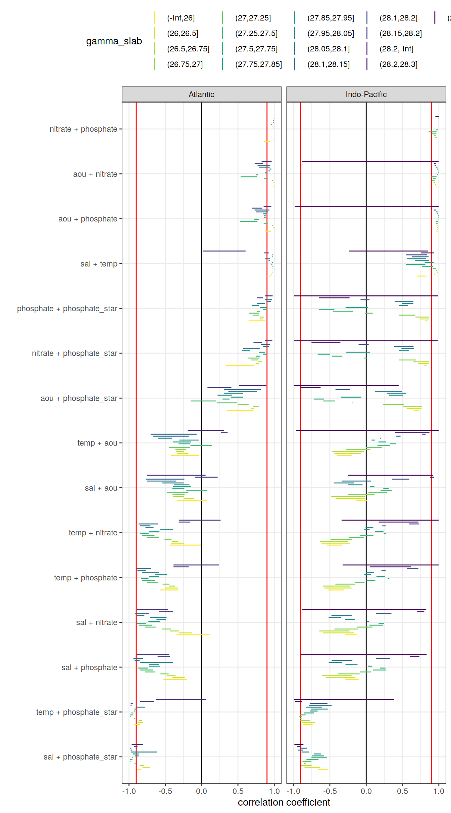

eMLR - assumption testing
Jens Daniel Müller and Donghe Zhu
15 July, 2021
Last updated: 2021-07-15
Checks: 7 0
Knit directory: emlr_mod_v_XXX/
This reproducible R Markdown analysis was created with workflowr (version 1.6.2). The Checks tab describes the reproducibility checks that were applied when the results were created. The Past versions tab lists the development history.
Great! Since the R Markdown file has been committed to the Git repository, you know the exact version of the code that produced these results.
Great job! The global environment was empty. Objects defined in the global environment can affect the analysis in your R Markdown file in unknown ways. For reproduciblity it’s best to always run the code in an empty environment.
The command set.seed(20200707) was run prior to running the code in the R Markdown file. Setting a seed ensures that any results that rely on randomness, e.g. subsampling or permutations, are reproducible.
Great job! Recording the operating system, R version, and package versions is critical for reproducibility.
Nice! There were no cached chunks for this analysis, so you can be confident that you successfully produced the results during this run.
Great job! Using relative paths to the files within your workflowr project makes it easier to run your code on other machines.
Great! You are using Git for version control. Tracking code development and connecting the code version to the results is critical for reproducibility.
The results in this page were generated with repository version 663457c. See the Past versions tab to see a history of the changes made to the R Markdown and HTML files.
Note that you need to be careful to ensure that all relevant files for the analysis have been committed to Git prior to generating the results (you can use wflow_publish or wflow_git_commit). workflowr only checks the R Markdown file, but you know if there are other scripts or data files that it depends on. Below is the status of the Git repository when the results were generated:
Ignored files:
Ignored: .Rhistory
Ignored: .Rproj.user/
Unstaged changes:
Modified: data/auxillary/params_local.rds
Note that any generated files, e.g. HTML, png, CSS, etc., are not included in this status report because it is ok for generated content to have uncommitted changes.
These are the previous versions of the repository in which changes were made to the R Markdown (analysis/eMLR_assumption_testing.Rmd) and HTML (docs/eMLR_assumption_testing.html) files. If you’ve configured a remote Git repository (see ?wflow_git_remote), click on the hyperlinks in the table below to view the files as they were in that past version.
| File | Version | Author | Date | Message |
|---|---|---|---|---|
| html | a01e135 | Donghe-Zhu | 2021-07-07 | Build site. |
| html | bc83ef2 | Donghe-Zhu | 2021-07-07 | Build site. |
| html | 75e7b07 | Donghe-Zhu | 2021-07-06 | Build site. |
| html | 697aa6d | Donghe-Zhu | 2021-07-06 | Build site. |
| html | d52e2de | Donghe-Zhu | 2021-07-06 | Build site. |
| html | f2bde6b | Donghe-Zhu | 2021-07-06 | Build site. |
| html | 1133f28 | Donghe-Zhu | 2021-07-06 | Build site. |
| html | fe3a1cd | Donghe-Zhu | 2021-07-06 | Build site. |
| html | d9cdf15 | Donghe-Zhu | 2021-07-06 | Build site. |
| html | ee4cd2d | Donghe-Zhu | 2021-07-06 | Build site. |
| html | 93821c1 | Donghe-Zhu | 2021-07-05 | Build site. |
| html | d44db8e | Donghe-Zhu | 2021-07-05 | Build site. |
| html | 20b3436 | Donghe-Zhu | 2021-07-05 | Build site. |
| html | d982ea5 | Donghe-Zhu | 2021-07-05 | Build site. |
| html | 7397e53 | Donghe-Zhu | 2021-07-05 | Build site. |
| html | f2e4805 | Donghe-Zhu | 2021-07-05 | Build site. |
| html | e2d011a | Donghe-Zhu | 2021-07-05 | Build site. |
| html | 85e0349 | Donghe-Zhu | 2021-07-05 | Build site. |
| html | 6ee0146 | Donghe-Zhu | 2021-07-05 | Build site. |
| html | a482a6b | Donghe-Zhu | 2021-07-05 | Build site. |
| html | f59f1b3 | Donghe-Zhu | 2021-07-05 | Build site. |
| html | 116bcab | Donghe-Zhu | 2021-07-04 | Build site. |
| html | cb1c8dc | Donghe-Zhu | 2021-07-04 | Build site. |
| html | c9bdd83 | Donghe-Zhu | 2021-07-04 | Build site. |
| html | 1920ad9 | Donghe-Zhu | 2021-07-04 | Build site. |
| html | 0b02791 | Donghe-Zhu | 2021-06-25 | change random subset files |
| html | caf62d8 | Donghe-Zhu | 2021-06-25 | Build site. |
| html | 90a9da5 | Donghe-Zhu | 2021-06-25 | Build site. |
| html | bb413c8 | Donghe-Zhu | 2021-06-25 | Build site. |
| html | e7a5266 | Donghe-Zhu | 2021-06-24 | Build site. |
| html | 7c57720 | Donghe-Zhu | 2021-06-24 | Build site. |
| html | b5b95a9 | Donghe-Zhu | 2021-06-24 | Build site. |
| html | 472aad4 | Donghe-Zhu | 2021-06-24 | Build site. |
| Rmd | 76ce72b | Donghe-Zhu | 2021-06-24 | local rebuild |
| html | d517836 | Donghe-Zhu | 2021-06-24 | 0 |
| html | 9221bfe | Donghe-Zhu | 2021-06-24 | Build site. |
| html | bff5fbf | Donghe-Zhu | 2021-06-23 | Build site. |
| html | 256a616 | Donghe-Zhu | 2021-06-23 | Build site. |
| html | 00072e2 | Donghe-Zhu | 2021-06-23 | Build site. |
| Rmd | 71d2509 | Donghe-Zhu | 2021-06-23 | local rebuild |
| html | 61cae2b | Donghe-Zhu | 2021-06-20 | 1 |
| html | d20c383 | Donghe-Zhu | 2021-06-18 | Build site. |
| html | b0874a2 | Donghe-Zhu | 2021-06-17 | Build site. |
| html | 72c2f2e | Donghe-Zhu | 2021-06-15 | Build site. |
| html | d97dcb6 | Donghe-Zhu | 2021-06-08 | 1 |
| html | 25dda1d | Donghe-Zhu | 2021-06-08 | Build site. |
| html | bd2bcc3 | Donghe-Zhu | 2021-06-08 | Build site. |
| html | e9b27d7 | Donghe-Zhu | 2021-06-07 | Build site. |
| html | 7ae0d4b | Donghe-Zhu | 2021-06-07 | Build site. |
| html | 325391f | Donghe-Zhu | 2021-06-07 | Build site. |
| html | ed89970 | Donghe-Zhu | 2021-06-07 | Build site. |
| html | df37958 | Donghe-Zhu | 2021-06-07 | 1 |
| html | 812bf63 | Donghe-Zhu | 2021-06-06 | Build site. |
| html | 65c89c8 | Donghe-Zhu | 2021-06-06 | Build site. |
| html | 9baa3b2 | Donghe-Zhu | 2021-06-06 | debug |
| html | b7d99cf | Donghe-Zhu | 2021-06-06 | Build site. |
| html | 5d8fa90 | Donghe-Zhu | 2021-06-06 | Build site. |
| html | dbe2a95 | Donghe-Zhu | 2021-05-28 | Build site. |
| html | d50b039 | Donghe-Zhu | 2021-05-28 | Build site. |
| html | 441ebe5 | Donghe-Zhu | 2021-05-28 | Build site. |
| html | 6262ad3 | Donghe-Zhu | 2021-05-28 | Build site. |
| html | a61aa77 | Donghe-Zhu | 2021-05-28 | Build site. |
| html | b8dbce4 | Donghe-Zhu | 2021-05-28 | Build site. |
| html | 94a833e | Donghe-Zhu | 2021-05-27 | Build site. |
| html | 5e0bd64 | Donghe-Zhu | 2021-05-27 | Build site. |
| html | af1eadd | Donghe-Zhu | 2021-05-27 | Build site. |
| html | 9179bfe | Donghe-Zhu | 2021-05-27 | Build site. |
| html | 28cbe5e | Donghe-Zhu | 2021-05-27 | Build site. |
| html | a618f02 | Donghe-Zhu | 2021-05-27 | Build site. |
| html | 4623e38 | Donghe-Zhu | 2021-05-27 | Build site. |
| html | b81bb49 | Donghe-Zhu | 2021-05-27 | Build site. |
| html | 951e188 | Donghe-Zhu | 2021-05-27 | Build site. |
| html | e377833 | Donghe-Zhu | 2021-05-26 | Build site. |
| html | 2705a04 | Donghe-Zhu | 2021-03-28 | Build site. |
| html | cd5f759 | Donghe-Zhu | 2021-03-28 | Build site. |
| html | 75dda4d | Donghe-Zhu | 2021-03-27 | Build site. |
| html | 0b19f6e | Donghe-Zhu | 2021-03-27 | Build site. |
| html | e2704ca | Donghe-Zhu | 2021-03-27 | Build site. |
| html | 3061a0b | Donghe-Zhu | 2021-03-27 | Build site. |
| html | b883157 | Donghe-Zhu | 2021-03-27 | Build site. |
| html | 0c20513 | Donghe-Zhu | 2021-03-26 | Build site. |
| html | d19654d | Donghe-Zhu | 2021-03-26 | Build site. |
| html | 6c53dbf | Donghe-Zhu | 2021-03-25 | Build site. |
| html | 1914a11 | Donghe-Zhu | 2021-03-24 | Build site. |
| html | 8be810e | Donghe-Zhu | 2021-03-23 | Build site. |
| html | bf19764 | Donghe-Zhu | 2021-03-22 | Build site. |
| html | 3ec9d3d | Donghe-Zhu | 2021-03-22 | Build site. |
| html | 134ace1 | Donghe-Zhu | 2021-03-22 | Build site. |
| html | f6d70a4 | Donghe-Zhu | 2021-03-22 | Build site. |
| html | 183443b | Donghe-Zhu | 2021-03-21 | Build site. |
| html | 2e6976b | Donghe-Zhu | 2021-03-21 | Build site. |
| html | 51a42bd | Donghe-Zhu | 2021-03-16 | Build site. |
| html | f745381 | Donghe-Zhu | 2021-03-16 | Build site. |
| html | aecbf75 | Donghe-Zhu | 2021-03-14 | Build site. |
| html | 1b2a0c2 | Donghe-Zhu | 2021-03-14 | Build site. |
| html | 6733e48 | Donghe-Zhu | 2021-03-12 | Build site. |
| html | ba71e6a | Donghe-Zhu | 2021-03-12 | Build site. |
| html | 9dbf5bd | Donghe-Zhu | 2021-03-11 | Build site. |
| html | a49df30 | Donghe-Zhu | 2021-03-11 | Build site. |
| html | b3348a5 | Donghe-Zhu | 2021-03-11 | Build site. |
| html | 1c24ff7 | Donghe-Zhu | 2021-03-10 | Build site. |
| html | 94ce5a8 | Donghe-Zhu | 2021-03-10 | Build site. |
| html | db33928 | Donghe-Zhu | 2021-03-10 | Build site. |
| html | 3d1f470 | Donghe-Zhu | 2021-03-10 | Build site. |
| html | 9b7bc66 | Donghe-Zhu | 2021-03-10 | Build site. |
| html | 4168b43 | Donghe-Zhu | 2021-03-10 | Build site. |
| html | 5365f80 | Donghe-Zhu | 2021-03-10 | Build site. |
| html | 2b6c392 | Donghe-Zhu | 2021-03-10 | Build site. |
| html | 9f58753 | Donghe-Zhu | 2021-03-10 | Build site. |
| html | f2a7146 | Donghe-Zhu | 2021-03-10 | Build site. |
| html | fd528ed | Donghe-Zhu | 2021-03-10 | Build site. |
| html | 9d5a62c | Donghe-Zhu | 2021-03-10 | Build site. |
| html | 5d1e70b | Donghe-Zhu | 2021-03-10 | Build site. |
| html | 2093979 | Donghe-Zhu | 2021-03-10 | Build site. |
| html | b865899 | Donghe-Zhu | 2021-03-10 | Build site. |
| html | cc2a956 | Donghe-Zhu | 2021-03-10 | Build site. |
| html | 60689fb | Donghe-Zhu | 2021-03-10 | Build site. |
| html | 9230b52 | Donghe-Zhu | 2021-03-10 | Build site. |
| html | dba33c8 | Donghe-Zhu | 2021-03-09 | Build site. |
| html | 17f1c4a | Donghe-Zhu | 2021-03-09 | Build site. |
| html | c024d1a | Donghe-Zhu | 2021-03-09 | Build site. |
| html | 02f7242 | Donghe-Zhu | 2021-03-09 | Build site. |
| html | 6f50bc6 | Donghe-Zhu | 2021-03-09 | Build site. |
| html | 1691156 | Donghe-Zhu | 2021-03-08 | Build site. |
| html | c0ceaf8 | Donghe-Zhu | 2021-03-08 | Build site. |
| html | 058e0a1 | Donghe-Zhu | 2021-03-08 | Build site. |
| html | 112dea0 | Donghe-Zhu | 2021-03-08 | Build site. |
| html | 1843412 | Donghe-Zhu | 2021-03-08 | Build site. |
| html | 65b0cef | Donghe-Zhu | 2021-03-07 | Build site. |
| html | 4083a6c | Donghe-Zhu | 2021-03-07 | Build site. |
| html | 3fbbfa4 | Donghe-Zhu | 2021-03-07 | Build site. |
| html | 627c8fb | Donghe-Zhu | 2021-03-07 | Build site. |
| html | 3607f4d | Donghe-Zhu | 2021-03-07 | Build site. |
| html | 9ef3222 | Donghe-Zhu | 2021-03-05 | Build site. |
| html | 8c1e978 | Donghe-Zhu | 2021-03-05 | Build site. |
| html | 865f68c | Donghe-Zhu | 2021-03-05 | Build site. |
| html | ee69bc1 | Donghe-Zhu | 2021-03-05 | Build site. |
| html | a79291f | Donghe-Zhu | 2021-03-05 | Build site. |
| html | e8c6f30 | Donghe-Zhu | 2021-03-04 | Build site. |
| html | 59288fe | Donghe-Zhu | 2021-03-04 | Build site. |
| html | 731abc8 | Donghe-Zhu | 2021-03-04 | Build site. |
| html | e2a5a33 | Donghe-Zhu | 2021-03-04 | Build site. |
| html | c7892c1 | Donghe-Zhu | 2021-03-04 | Build site. |
| html | 924430b | Donghe-Zhu | 2021-03-03 | Build site. |
| html | 0d0bca1 | Donghe-Zhu | 2021-03-03 | Build site. |
| html | cb63c16 | Donghe-Zhu | 2021-03-03 | Build site. |
| html | ffda45a | Donghe-Zhu | 2021-03-03 | Build site. |
| html | 691ba81 | Donghe-Zhu | 2021-03-03 | Build site. |
| html | c5e45a2 | Donghe-Zhu | 2021-03-03 | Build site. |
| html | 89c3e58 | Donghe-Zhu | 2021-03-03 | Build site. |
| html | c407a50 | Donghe-Zhu | 2021-03-03 | Build site. |
| html | c911669 | Donghe-Zhu | 2021-03-03 | Build site. |
| html | b71c719 | Donghe-Zhu | 2021-03-01 | Build site. |
| html | 13666ca | Donghe-Zhu | 2021-03-01 | Build site. |
| html | c6e60fe | Donghe-Zhu | 2021-03-01 | Build site. |
| html | 7a388f7 | Donghe-Zhu | 2021-03-01 | Build site. |
| html | 799e913 | Donghe-Zhu | 2021-03-01 | Build site. |
| html | 66ff99f | Donghe-Zhu | 2021-03-01 | Build site. |
| html | ac9bb7a | Donghe-Zhu | 2021-02-28 | Build site. |
| html | efdc047 | Donghe-Zhu | 2021-02-28 | Build site. |
| html | e9a7418 | Donghe-Zhu | 2021-02-28 | Build site. |
| html | e152917 | Donghe-Zhu | 2021-02-28 | Build site. |
| html | feb991c | Donghe-Zhu | 2021-02-27 | Build site. |
| html | 287123c | Donghe-Zhu | 2021-02-27 | Build site. |
| html | 54d5b5b | Donghe-Zhu | 2021-02-27 | Build site. |
| html | 330f064 | Donghe-Zhu | 2021-02-27 | Build site. |
| html | adbc9bc | Donghe-Zhu | 2021-02-27 | Build site. |
| html | 5937141 | Donghe-Zhu | 2021-02-27 | Build site. |
| html | 4414bbf | Donghe-Zhu | 2021-02-27 | Build site. |
| html | a265efb | Donghe-Zhu | 2021-02-27 | Build site. |
| html | 19edd1e | Donghe-Zhu | 2021-02-27 | Build site. |
| html | f20483f | Donghe-Zhu | 2021-02-26 | Build site. |
| html | 6a2c7b3 | Donghe-Zhu | 2021-02-25 | Build site. |
| html | 02b976d | Donghe-Zhu | 2021-02-24 | Build site. |
| html | 354c224 | Donghe-Zhu | 2021-02-24 | Build site. |
| html | 1a0a88a | Donghe-Zhu | 2021-02-24 | Build site. |
| html | 57f701e | Donghe-Zhu | 2021-02-24 | Build site. |
| html | 06f3149 | Donghe-Zhu | 2021-02-16 | Build site. |
| html | 401eab3 | Donghe-Zhu | 2021-02-15 | Build site. |
| html | e3bba84 | Donghe-Zhu | 2021-02-15 | Build site. |
| html | 5dce4b1 | Donghe-Zhu | 2021-02-15 | Build site. |
| html | 4469a0c | Donghe-Zhu | 2021-02-13 | Build site. |
| html | 5ae6a69 | Donghe-Zhu | 2021-02-10 | Build site. |
| html | 05385dc | Donghe-Zhu | 2021-02-10 | Build site. |
| html | f791ae4 | Donghe-Zhu | 2021-02-09 | Build site. |
| html | f71ae34 | Donghe-Zhu | 2021-02-09 | Build site. |
| html | c011832 | Donghe-Zhu | 2021-02-09 | Build site. |
| html | a145fa7 | Donghe-Zhu | 2021-02-09 | Build site. |
| html | c344e42 | Donghe-Zhu | 2021-02-08 | Build site. |
| html | 2f095d7 | Donghe-Zhu | 2021-02-07 | Build site. |
| html | 2305044 | Donghe-Zhu | 2021-02-07 | Build site. |
| html | 1fad5f1 | Donghe-Zhu | 2021-02-07 | Build site. |
| html | ca03c39 | Donghe-Zhu | 2021-02-07 | Build site. |
| html | e2ffc14 | Donghe-Zhu | 2021-02-05 | Build site. |
| Rmd | 55cdfe6 | Donghe-Zhu | 2021-02-05 | local rebuild |
| html | cd7c52c | Donghe-Zhu | 2021-02-04 | Build site. |
| html | bcf84f4 | Donghe-Zhu | 2021-02-02 | Build site. |
| html | a518739 | Donghe-Zhu | 2021-02-01 | Build site. |
| html | 61666de | Donghe-Zhu | 2021-01-31 | Build site. |
| html | 865b582 | Donghe-Zhu | 2021-01-31 | Build site. |
| html | 3e68089 | Donghe-Zhu | 2021-01-31 | Build site. |
| html | ecf335c | Donghe-Zhu | 2021-01-31 | Build site. |
| html | a618965 | Donghe-Zhu | 2021-01-31 | Build site. |
| html | 59e006e | Donghe-Zhu | 2021-01-31 | Build site. |
| html | a1c8f87 | Donghe-Zhu | 2021-01-31 | Build site. |
| html | ae5c18f | Donghe-Zhu | 2021-01-31 | Build site. |
| html | b50fe52 | Donghe-Zhu | 2021-01-31 | Build site. |
| html | ac99ae5 | jens-daniel-mueller | 2021-01-29 | code review |
| html | b5bdcaf | Donghe-Zhu | 2021-01-29 | Build site. |
| html | 442010d | Donghe-Zhu | 2021-01-29 | Build site. |
| html | 372adf5 | Donghe-Zhu | 2021-01-29 | Build site. |
| html | af8788e | Donghe-Zhu | 2021-01-29 | Build site. |
| html | 21c91c9 | Donghe-Zhu | 2021-01-29 | Build site. |
| html | eded038 | Donghe-Zhu | 2021-01-29 | Build site. |
| html | 541d4dd | Donghe-Zhu | 2021-01-29 | Build site. |
| html | 6a75576 | Donghe-Zhu | 2021-01-28 | Build site. |
| html | 16fba40 | Donghe-Zhu | 2021-01-28 | Build site. |
| html | 12bc567 | Donghe-Zhu | 2021-01-27 | Build site. |
| html | ceed31b | Donghe-Zhu | 2021-01-27 | Build site. |
| html | 342402d | Donghe-Zhu | 2021-01-27 | Build site. |
| html | 5bad5c2 | Donghe-Zhu | 2021-01-27 | Build site. |
| html | 61efb56 | Donghe-Zhu | 2021-01-25 | Build site. |
| html | 48f638e | Donghe-Zhu | 2021-01-25 | Build site. |
| html | c1cec47 | Donghe-Zhu | 2021-01-25 | Build site. |
| html | 05ffb0c | Donghe-Zhu | 2021-01-25 | Build site. |
| html | 8b97165 | Donghe-Zhu | 2021-01-25 | Build site. |
| html | c569946 | Donghe-Zhu | 2021-01-24 | Build site. |
| html | a2f0d56 | Donghe-Zhu | 2021-01-23 | Build site. |
| html | 28509fc | Donghe-Zhu | 2021-01-23 | Build site. |
| html | 4c28e4a | Donghe-Zhu | 2021-01-22 | Build site. |
| html | 24cc264 | jens-daniel-mueller | 2021-01-22 | cleaned /docs before creating copies |
| html | 88eb28f | Donghe-Zhu | 2021-01-21 | Build site. |
| html | 2679490 | Donghe-Zhu | 2021-01-21 | Build site. |
| html | 7891955 | Donghe-Zhu | 2021-01-21 | Build site. |
| html | d4cf1cb | Donghe-Zhu | 2021-01-21 | Build site. |
| html | 1f3e5b6 | jens-daniel-mueller | 2021-01-20 | Build site. |
| html | 0e7bdf1 | jens-daniel-mueller | 2021-01-15 | cleaning template repository |
| html | 73cbef3 | jens-daniel-mueller | 2021-01-15 | Build site. |
| html | 4571843 | jens-daniel-mueller | 2021-01-14 | revision and html deleted for template copying |
| html | 23151cd | jens-daniel-mueller | 2021-01-14 | Build site. |
| html | b3564aa | jens-daniel-mueller | 2021-01-14 | Build site. |
| html | 8d032c3 | jens-daniel-mueller | 2021-01-14 | Build site. |
| html | 022871c | Donghe-Zhu | 2021-01-13 | Build site. |
| Rmd | d44f36f | Donghe-Zhu | 2021-01-13 | reorder analysis final |
| html | 17dee1d | jens-daniel-mueller | 2021-01-13 | Build site. |
| html | a076226 | Donghe-Zhu | 2021-01-11 | Build site. |
| Rmd | 52eff18 | Donghe-Zhu | 2021-01-09 | Implemet model_run and subsetting |
| html | 7cdea0c | jens-daniel-mueller | 2021-01-06 | Build site. |
| html | fa85b93 | jens-daniel-mueller | 2021-01-06 | Build site. |
| html | e5cb81a | Donghe-Zhu | 2021-01-05 | Build site. |
| html | a499f10 | Donghe-Zhu | 2021-01-05 | Build site. |
| Rmd | 715bdb4 | Donghe-Zhu | 2021-01-02 | model modification |
| html | fb8a752 | Donghe-Zhu | 2020-12-23 | Build site. |
| Rmd | 82e3c9c | Donghe-Zhu | 2020-12-23 | first build after creating model template |
| html | 8fae0b2 | Donghe-Zhu | 2020-12-21 | Build site. |
| html | c8b76b3 | jens-daniel-mueller | 2020-12-19 | Build site. |
| Rmd | b5fedce | jens-daniel-mueller | 2020-12-19 | first build after creating model template |
| Rmd | 8e8abf5 | Jens Müller | 2020-12-18 | Initial commit |
1 Required data
Required are:
- cleaned and prepared GLODAP-based synthetic cmorized model subsetting file
GLODAP <-
read_csv(paste(path_version_data,
"GLODAPv2.2020_MLR_fitting_ready.csv",
sep = ""))2 Predictor correlation
The correlation between:
- pairs of seven potential predictor variables and
- C* and seven potential predictor variables
were investigated based on:
- property-property plots and
- calculated correlation coefficients.
2.1 Correlation plots
For an overview, a random subset of data from all eras was plotted separately for both basins, with color indicating neutral density slabs (high density = dark-purple color).
for (i_basin in unique(GLODAP$basin)) {
# i_basin <- unique(GLODAP$basin)[1]
print(
GLODAP %>%
filter(basin == i_basin) %>%
sample_frac(0.05) %>%
ggpairs(columns = c(params_local$MLR_target,
params_local$MLR_predictors),
upper = "blank",
ggplot2::aes(col = gamma_slab, fill = gamma_slab, alpha = 0.01)) +
scale_fill_viridis_d(direction = -1) +
scale_color_viridis_d(direction = -1) +
labs(title = paste("Basin:", i_basin ,"| era: all | subsample size: 5 % of",
nrow(GLODAP %>% filter(basin == i_basin))))
)
}
| Version | Author | Date |
|---|---|---|
| a01e135 | Donghe-Zhu | 2021-07-07 |
| bc83ef2 | Donghe-Zhu | 2021-07-07 |
| 75e7b07 | Donghe-Zhu | 2021-07-06 |
| 697aa6d | Donghe-Zhu | 2021-07-06 |
| d52e2de | Donghe-Zhu | 2021-07-06 |
| f2bde6b | Donghe-Zhu | 2021-07-06 |
| 1133f28 | Donghe-Zhu | 2021-07-06 |
| fe3a1cd | Donghe-Zhu | 2021-07-06 |
| d9cdf15 | Donghe-Zhu | 2021-07-06 |
| ee4cd2d | Donghe-Zhu | 2021-07-06 |
| 93821c1 | Donghe-Zhu | 2021-07-05 |
| d44db8e | Donghe-Zhu | 2021-07-05 |
| 20b3436 | Donghe-Zhu | 2021-07-05 |
| d982ea5 | Donghe-Zhu | 2021-07-05 |
| 7397e53 | Donghe-Zhu | 2021-07-05 |
| f2e4805 | Donghe-Zhu | 2021-07-05 |
| e2d011a | Donghe-Zhu | 2021-07-05 |
| 85e0349 | Donghe-Zhu | 2021-07-05 |
| 6ee0146 | Donghe-Zhu | 2021-07-05 |
| a482a6b | Donghe-Zhu | 2021-07-05 |
| f59f1b3 | Donghe-Zhu | 2021-07-05 |
| 116bcab | Donghe-Zhu | 2021-07-04 |
| cb1c8dc | Donghe-Zhu | 2021-07-04 |
| c9bdd83 | Donghe-Zhu | 2021-07-04 |
| 1920ad9 | Donghe-Zhu | 2021-07-04 |
| 0b02791 | Donghe-Zhu | 2021-06-25 |
| caf62d8 | Donghe-Zhu | 2021-06-25 |
| 90a9da5 | Donghe-Zhu | 2021-06-25 |
| bb413c8 | Donghe-Zhu | 2021-06-25 |
| e7a5266 | Donghe-Zhu | 2021-06-24 |
| 7c57720 | Donghe-Zhu | 2021-06-24 |
| b5b95a9 | Donghe-Zhu | 2021-06-24 |
| 472aad4 | Donghe-Zhu | 2021-06-24 |
| d517836 | Donghe-Zhu | 2021-06-24 |
| 9221bfe | Donghe-Zhu | 2021-06-24 |
| bff5fbf | Donghe-Zhu | 2021-06-23 |
| 256a616 | Donghe-Zhu | 2021-06-23 |
| 00072e2 | Donghe-Zhu | 2021-06-23 |
| 7431530 | Donghe-Zhu | 2021-06-20 |
| d20c383 | Donghe-Zhu | 2021-06-18 |
| b0874a2 | Donghe-Zhu | 2021-06-17 |
| 72c2f2e | Donghe-Zhu | 2021-06-15 |
| d97dcb6 | Donghe-Zhu | 2021-06-08 |
| 25dda1d | Donghe-Zhu | 2021-06-08 |
| bd2bcc3 | Donghe-Zhu | 2021-06-08 |
| e9b27d7 | Donghe-Zhu | 2021-06-07 |
| 7ae0d4b | Donghe-Zhu | 2021-06-07 |
| 325391f | Donghe-Zhu | 2021-06-07 |
| ed89970 | Donghe-Zhu | 2021-06-07 |
| df37958 | Donghe-Zhu | 2021-06-07 |
| 812bf63 | Donghe-Zhu | 2021-06-06 |
| 65c89c8 | Donghe-Zhu | 2021-06-06 |
| 9baa3b2 | Donghe-Zhu | 2021-06-06 |
| b7d99cf | Donghe-Zhu | 2021-06-06 |
| 5d8fa90 | Donghe-Zhu | 2021-06-06 |
| dbe2a95 | Donghe-Zhu | 2021-05-28 |
| d50b039 | Donghe-Zhu | 2021-05-28 |
| 441ebe5 | Donghe-Zhu | 2021-05-28 |
| 6262ad3 | Donghe-Zhu | 2021-05-28 |
| a61aa77 | Donghe-Zhu | 2021-05-28 |
| b8dbce4 | Donghe-Zhu | 2021-05-28 |
| 94a833e | Donghe-Zhu | 2021-05-27 |
| 5e0bd64 | Donghe-Zhu | 2021-05-27 |
| af1eadd | Donghe-Zhu | 2021-05-27 |
| 9179bfe | Donghe-Zhu | 2021-05-27 |
| 28cbe5e | Donghe-Zhu | 2021-05-27 |
| a618f02 | Donghe-Zhu | 2021-05-27 |
| 4623e38 | Donghe-Zhu | 2021-05-27 |
| b81bb49 | Donghe-Zhu | 2021-05-27 |
| 951e188 | Donghe-Zhu | 2021-05-27 |
| e377833 | Donghe-Zhu | 2021-05-26 |
| 2705a04 | Donghe-Zhu | 2021-03-28 |
| cd5f759 | Donghe-Zhu | 2021-03-28 |
| 75dda4d | Donghe-Zhu | 2021-03-27 |
| 0b19f6e | Donghe-Zhu | 2021-03-27 |
| e2704ca | Donghe-Zhu | 2021-03-27 |
| 3061a0b | Donghe-Zhu | 2021-03-27 |
| b883157 | Donghe-Zhu | 2021-03-27 |
| d19654d | Donghe-Zhu | 2021-03-26 |
| 1914a11 | Donghe-Zhu | 2021-03-24 |
| 8be810e | Donghe-Zhu | 2021-03-23 |
| bf19764 | Donghe-Zhu | 2021-03-22 |
| 3ec9d3d | Donghe-Zhu | 2021-03-22 |
| 134ace1 | Donghe-Zhu | 2021-03-22 |
| f6d70a4 | Donghe-Zhu | 2021-03-22 |
| 183443b | Donghe-Zhu | 2021-03-21 |
| 2e6976b | Donghe-Zhu | 2021-03-21 |
| 51a42bd | Donghe-Zhu | 2021-03-16 |
| f745381 | Donghe-Zhu | 2021-03-16 |
| aecbf75 | Donghe-Zhu | 2021-03-14 |
| 1b2a0c2 | Donghe-Zhu | 2021-03-14 |
| 6733e48 | Donghe-Zhu | 2021-03-12 |
| ba71e6a | Donghe-Zhu | 2021-03-12 |
| 9dbf5bd | Donghe-Zhu | 2021-03-11 |
| a49df30 | Donghe-Zhu | 2021-03-11 |
| b3348a5 | Donghe-Zhu | 2021-03-11 |
| 1c24ff7 | Donghe-Zhu | 2021-03-10 |
| 94ce5a8 | Donghe-Zhu | 2021-03-10 |
| db33928 | Donghe-Zhu | 2021-03-10 |
| 3d1f470 | Donghe-Zhu | 2021-03-10 |
| 9b7bc66 | Donghe-Zhu | 2021-03-10 |
| 5365f80 | Donghe-Zhu | 2021-03-10 |
| 2b6c392 | Donghe-Zhu | 2021-03-10 |
| 9f58753 | Donghe-Zhu | 2021-03-10 |
| 9d5a62c | Donghe-Zhu | 2021-03-10 |
| 5d1e70b | Donghe-Zhu | 2021-03-10 |
| 2093979 | Donghe-Zhu | 2021-03-10 |
| cc2a956 | Donghe-Zhu | 2021-03-10 |
| 17f1c4a | Donghe-Zhu | 2021-03-09 |
| 02f7242 | Donghe-Zhu | 2021-03-09 |
| 1691156 | Donghe-Zhu | 2021-03-08 |
| c0ceaf8 | Donghe-Zhu | 2021-03-08 |
| 112dea0 | Donghe-Zhu | 2021-03-08 |
| 1843412 | Donghe-Zhu | 2021-03-08 |
| 3fbbfa4 | Donghe-Zhu | 2021-03-07 |
| 627c8fb | Donghe-Zhu | 2021-03-07 |
| 8c1e978 | Donghe-Zhu | 2021-03-05 |
| 865f68c | Donghe-Zhu | 2021-03-05 |
| ee69bc1 | Donghe-Zhu | 2021-03-05 |
| a79291f | Donghe-Zhu | 2021-03-05 |
| e8c6f30 | Donghe-Zhu | 2021-03-04 |
| 59288fe | Donghe-Zhu | 2021-03-04 |
| 731abc8 | Donghe-Zhu | 2021-03-04 |
| e2a5a33 | Donghe-Zhu | 2021-03-04 |
| c7892c1 | Donghe-Zhu | 2021-03-04 |
| 924430b | Donghe-Zhu | 2021-03-03 |
| 0d0bca1 | Donghe-Zhu | 2021-03-03 |
| cb63c16 | Donghe-Zhu | 2021-03-03 |
| ffda45a | Donghe-Zhu | 2021-03-03 |
| 691ba81 | Donghe-Zhu | 2021-03-03 |
| c5e45a2 | Donghe-Zhu | 2021-03-03 |
| 89c3e58 | Donghe-Zhu | 2021-03-03 |
| c911669 | Donghe-Zhu | 2021-03-03 |
| 13666ca | Donghe-Zhu | 2021-03-01 |
| 7a388f7 | Donghe-Zhu | 2021-03-01 |
| 799e913 | Donghe-Zhu | 2021-03-01 |
| 66ff99f | Donghe-Zhu | 2021-03-01 |
| ac9bb7a | Donghe-Zhu | 2021-02-28 |
| efdc047 | Donghe-Zhu | 2021-02-28 |
| e9a7418 | Donghe-Zhu | 2021-02-28 |
| 54d5b5b | Donghe-Zhu | 2021-02-27 |
| 330f064 | Donghe-Zhu | 2021-02-27 |
| 5937141 | Donghe-Zhu | 2021-02-27 |
| 4414bbf | Donghe-Zhu | 2021-02-27 |
| a265efb | Donghe-Zhu | 2021-02-27 |
| 19edd1e | Donghe-Zhu | 2021-02-27 |
| f20483f | Donghe-Zhu | 2021-02-26 |
| 6a2c7b3 | Donghe-Zhu | 2021-02-25 |
| 354c224 | Donghe-Zhu | 2021-02-24 |
| 1a0a88a | Donghe-Zhu | 2021-02-24 |
| 57f701e | Donghe-Zhu | 2021-02-24 |
| 06f3149 | Donghe-Zhu | 2021-02-16 |
| 5dce4b1 | Donghe-Zhu | 2021-02-15 |
| 4469a0c | Donghe-Zhu | 2021-02-13 |
| 5ae6a69 | Donghe-Zhu | 2021-02-10 |
| 05385dc | Donghe-Zhu | 2021-02-10 |
| f791ae4 | Donghe-Zhu | 2021-02-09 |
| f71ae34 | Donghe-Zhu | 2021-02-09 |
| a145fa7 | Donghe-Zhu | 2021-02-09 |
| c344e42 | Donghe-Zhu | 2021-02-08 |
| 1fad5f1 | Donghe-Zhu | 2021-02-07 |
| ca03c39 | Donghe-Zhu | 2021-02-07 |
| cd7c52c | Donghe-Zhu | 2021-02-04 |
| bcf84f4 | Donghe-Zhu | 2021-02-02 |
| 865b582 | Donghe-Zhu | 2021-01-31 |
| 3e68089 | Donghe-Zhu | 2021-01-31 |
| ecf335c | Donghe-Zhu | 2021-01-31 |
| a618965 | Donghe-Zhu | 2021-01-31 |
| 59e006e | Donghe-Zhu | 2021-01-31 |
| a1c8f87 | Donghe-Zhu | 2021-01-31 |
| b50fe52 | Donghe-Zhu | 2021-01-31 |
| ac99ae5 | jens-daniel-mueller | 2021-01-29 |
| b5bdcaf | Donghe-Zhu | 2021-01-29 |
| 372adf5 | Donghe-Zhu | 2021-01-29 |
| af8788e | Donghe-Zhu | 2021-01-29 |
| 21c91c9 | Donghe-Zhu | 2021-01-29 |
| eded038 | Donghe-Zhu | 2021-01-29 |
| 541d4dd | Donghe-Zhu | 2021-01-29 |
| 6a75576 | Donghe-Zhu | 2021-01-28 |
| 16fba40 | Donghe-Zhu | 2021-01-28 |
| 12bc567 | Donghe-Zhu | 2021-01-27 |
| ceed31b | Donghe-Zhu | 2021-01-27 |
| 342402d | Donghe-Zhu | 2021-01-27 |
| 5bad5c2 | Donghe-Zhu | 2021-01-27 |
| 61efb56 | Donghe-Zhu | 2021-01-25 |
| 48f638e | Donghe-Zhu | 2021-01-25 |
| c1cec47 | Donghe-Zhu | 2021-01-25 |
| 05ffb0c | Donghe-Zhu | 2021-01-25 |
| 8b97165 | Donghe-Zhu | 2021-01-25 |
| c569946 | Donghe-Zhu | 2021-01-24 |
| a2f0d56 | Donghe-Zhu | 2021-01-23 |
| 28509fc | Donghe-Zhu | 2021-01-23 |
| 4c28e4a | Donghe-Zhu | 2021-01-22 |
| 24cc264 | jens-daniel-mueller | 2021-01-22 |
| 7891955 | Donghe-Zhu | 2021-01-21 |
| d4cf1cb | Donghe-Zhu | 2021-01-21 |
| 1f3e5b6 | jens-daniel-mueller | 2021-01-20 |
| 0e7bdf1 | jens-daniel-mueller | 2021-01-15 |
| 4571843 | jens-daniel-mueller | 2021-01-14 |
| b3564aa | jens-daniel-mueller | 2021-01-14 |
| 8d032c3 | jens-daniel-mueller | 2021-01-14 |
| 17dee1d | jens-daniel-mueller | 2021-01-13 |
| 7cdea0c | jens-daniel-mueller | 2021-01-06 |
| fa85b93 | jens-daniel-mueller | 2021-01-06 |
| e5cb81a | Donghe-Zhu | 2021-01-05 |
| a499f10 | Donghe-Zhu | 2021-01-05 |
| fb8a752 | Donghe-Zhu | 2020-12-23 |
| 8fae0b2 | Donghe-Zhu | 2020-12-21 |
| c8b76b3 | jens-daniel-mueller | 2020-12-19 |

| Version | Author | Date |
|---|---|---|
| a01e135 | Donghe-Zhu | 2021-07-07 |
| bc83ef2 | Donghe-Zhu | 2021-07-07 |
| 75e7b07 | Donghe-Zhu | 2021-07-06 |
| 697aa6d | Donghe-Zhu | 2021-07-06 |
| d52e2de | Donghe-Zhu | 2021-07-06 |
| f2bde6b | Donghe-Zhu | 2021-07-06 |
| 1133f28 | Donghe-Zhu | 2021-07-06 |
| fe3a1cd | Donghe-Zhu | 2021-07-06 |
| d9cdf15 | Donghe-Zhu | 2021-07-06 |
| ee4cd2d | Donghe-Zhu | 2021-07-06 |
| 93821c1 | Donghe-Zhu | 2021-07-05 |
| d44db8e | Donghe-Zhu | 2021-07-05 |
| 20b3436 | Donghe-Zhu | 2021-07-05 |
| d982ea5 | Donghe-Zhu | 2021-07-05 |
| 7397e53 | Donghe-Zhu | 2021-07-05 |
| f2e4805 | Donghe-Zhu | 2021-07-05 |
| e2d011a | Donghe-Zhu | 2021-07-05 |
| 85e0349 | Donghe-Zhu | 2021-07-05 |
| 6ee0146 | Donghe-Zhu | 2021-07-05 |
| a482a6b | Donghe-Zhu | 2021-07-05 |
| f59f1b3 | Donghe-Zhu | 2021-07-05 |
| 116bcab | Donghe-Zhu | 2021-07-04 |
| cb1c8dc | Donghe-Zhu | 2021-07-04 |
| c9bdd83 | Donghe-Zhu | 2021-07-04 |
| 1920ad9 | Donghe-Zhu | 2021-07-04 |
| 0b02791 | Donghe-Zhu | 2021-06-25 |
| caf62d8 | Donghe-Zhu | 2021-06-25 |
| 90a9da5 | Donghe-Zhu | 2021-06-25 |
| bb413c8 | Donghe-Zhu | 2021-06-25 |
| e7a5266 | Donghe-Zhu | 2021-06-24 |
| 7c57720 | Donghe-Zhu | 2021-06-24 |
| b5b95a9 | Donghe-Zhu | 2021-06-24 |
| 472aad4 | Donghe-Zhu | 2021-06-24 |
| d517836 | Donghe-Zhu | 2021-06-24 |
| 9221bfe | Donghe-Zhu | 2021-06-24 |
| bff5fbf | Donghe-Zhu | 2021-06-23 |
| 256a616 | Donghe-Zhu | 2021-06-23 |
| 00072e2 | Donghe-Zhu | 2021-06-23 |
| 7431530 | Donghe-Zhu | 2021-06-20 |
| d20c383 | Donghe-Zhu | 2021-06-18 |
| b0874a2 | Donghe-Zhu | 2021-06-17 |
| 72c2f2e | Donghe-Zhu | 2021-06-15 |
| d97dcb6 | Donghe-Zhu | 2021-06-08 |
| 25dda1d | Donghe-Zhu | 2021-06-08 |
| bd2bcc3 | Donghe-Zhu | 2021-06-08 |
| e9b27d7 | Donghe-Zhu | 2021-06-07 |
| 7ae0d4b | Donghe-Zhu | 2021-06-07 |
| 325391f | Donghe-Zhu | 2021-06-07 |
| ed89970 | Donghe-Zhu | 2021-06-07 |
| df37958 | Donghe-Zhu | 2021-06-07 |
| 812bf63 | Donghe-Zhu | 2021-06-06 |
| 65c89c8 | Donghe-Zhu | 2021-06-06 |
| 9baa3b2 | Donghe-Zhu | 2021-06-06 |
| b7d99cf | Donghe-Zhu | 2021-06-06 |
| 5d8fa90 | Donghe-Zhu | 2021-06-06 |
| dbe2a95 | Donghe-Zhu | 2021-05-28 |
| d50b039 | Donghe-Zhu | 2021-05-28 |
| 441ebe5 | Donghe-Zhu | 2021-05-28 |
| 6262ad3 | Donghe-Zhu | 2021-05-28 |
| a61aa77 | Donghe-Zhu | 2021-05-28 |
| b8dbce4 | Donghe-Zhu | 2021-05-28 |
| 94a833e | Donghe-Zhu | 2021-05-27 |
| 5e0bd64 | Donghe-Zhu | 2021-05-27 |
| af1eadd | Donghe-Zhu | 2021-05-27 |
| 9179bfe | Donghe-Zhu | 2021-05-27 |
| 28cbe5e | Donghe-Zhu | 2021-05-27 |
| a618f02 | Donghe-Zhu | 2021-05-27 |
| 4623e38 | Donghe-Zhu | 2021-05-27 |
| b81bb49 | Donghe-Zhu | 2021-05-27 |
| 951e188 | Donghe-Zhu | 2021-05-27 |
| e377833 | Donghe-Zhu | 2021-05-26 |
| 2705a04 | Donghe-Zhu | 2021-03-28 |
| cd5f759 | Donghe-Zhu | 2021-03-28 |
| 75dda4d | Donghe-Zhu | 2021-03-27 |
| 0b19f6e | Donghe-Zhu | 2021-03-27 |
| e2704ca | Donghe-Zhu | 2021-03-27 |
| 3061a0b | Donghe-Zhu | 2021-03-27 |
| b883157 | Donghe-Zhu | 2021-03-27 |
| d19654d | Donghe-Zhu | 2021-03-26 |
| 1914a11 | Donghe-Zhu | 2021-03-24 |
| 8be810e | Donghe-Zhu | 2021-03-23 |
| bf19764 | Donghe-Zhu | 2021-03-22 |
| 3ec9d3d | Donghe-Zhu | 2021-03-22 |
| 134ace1 | Donghe-Zhu | 2021-03-22 |
| f6d70a4 | Donghe-Zhu | 2021-03-22 |
| 183443b | Donghe-Zhu | 2021-03-21 |
| 2e6976b | Donghe-Zhu | 2021-03-21 |
| 51a42bd | Donghe-Zhu | 2021-03-16 |
| f745381 | Donghe-Zhu | 2021-03-16 |
| aecbf75 | Donghe-Zhu | 2021-03-14 |
| 1b2a0c2 | Donghe-Zhu | 2021-03-14 |
| 6733e48 | Donghe-Zhu | 2021-03-12 |
| ba71e6a | Donghe-Zhu | 2021-03-12 |
| 9dbf5bd | Donghe-Zhu | 2021-03-11 |
| a49df30 | Donghe-Zhu | 2021-03-11 |
| b3348a5 | Donghe-Zhu | 2021-03-11 |
| 1c24ff7 | Donghe-Zhu | 2021-03-10 |
| 94ce5a8 | Donghe-Zhu | 2021-03-10 |
| db33928 | Donghe-Zhu | 2021-03-10 |
| 3d1f470 | Donghe-Zhu | 2021-03-10 |
| 9b7bc66 | Donghe-Zhu | 2021-03-10 |
| 5365f80 | Donghe-Zhu | 2021-03-10 |
| 9d5a62c | Donghe-Zhu | 2021-03-10 |
| 5d1e70b | Donghe-Zhu | 2021-03-10 |
| 2093979 | Donghe-Zhu | 2021-03-10 |
| cc2a956 | Donghe-Zhu | 2021-03-10 |
| 17f1c4a | Donghe-Zhu | 2021-03-09 |
| 02f7242 | Donghe-Zhu | 2021-03-09 |
| 1691156 | Donghe-Zhu | 2021-03-08 |
| c0ceaf8 | Donghe-Zhu | 2021-03-08 |
| 058e0a1 | Donghe-Zhu | 2021-03-08 |
| 112dea0 | Donghe-Zhu | 2021-03-08 |
| 1843412 | Donghe-Zhu | 2021-03-08 |
| 3fbbfa4 | Donghe-Zhu | 2021-03-07 |
| 627c8fb | Donghe-Zhu | 2021-03-07 |
| 8c1e978 | Donghe-Zhu | 2021-03-05 |
| 865f68c | Donghe-Zhu | 2021-03-05 |
| ee69bc1 | Donghe-Zhu | 2021-03-05 |
| a79291f | Donghe-Zhu | 2021-03-05 |
| e8c6f30 | Donghe-Zhu | 2021-03-04 |
| 59288fe | Donghe-Zhu | 2021-03-04 |
| 731abc8 | Donghe-Zhu | 2021-03-04 |
| e2a5a33 | Donghe-Zhu | 2021-03-04 |
| c7892c1 | Donghe-Zhu | 2021-03-04 |
| 924430b | Donghe-Zhu | 2021-03-03 |
| 0d0bca1 | Donghe-Zhu | 2021-03-03 |
| cb63c16 | Donghe-Zhu | 2021-03-03 |
| 691ba81 | Donghe-Zhu | 2021-03-03 |
| c5e45a2 | Donghe-Zhu | 2021-03-03 |
| 89c3e58 | Donghe-Zhu | 2021-03-03 |
| c911669 | Donghe-Zhu | 2021-03-03 |
| 13666ca | Donghe-Zhu | 2021-03-01 |
| 7a388f7 | Donghe-Zhu | 2021-03-01 |
| 799e913 | Donghe-Zhu | 2021-03-01 |
| 66ff99f | Donghe-Zhu | 2021-03-01 |
| ac9bb7a | Donghe-Zhu | 2021-02-28 |
| efdc047 | Donghe-Zhu | 2021-02-28 |
| e9a7418 | Donghe-Zhu | 2021-02-28 |
| 54d5b5b | Donghe-Zhu | 2021-02-27 |
| 330f064 | Donghe-Zhu | 2021-02-27 |
| 5937141 | Donghe-Zhu | 2021-02-27 |
| 4414bbf | Donghe-Zhu | 2021-02-27 |
| a265efb | Donghe-Zhu | 2021-02-27 |
| 19edd1e | Donghe-Zhu | 2021-02-27 |
| f20483f | Donghe-Zhu | 2021-02-26 |
| 6a2c7b3 | Donghe-Zhu | 2021-02-25 |
| 354c224 | Donghe-Zhu | 2021-02-24 |
| 1a0a88a | Donghe-Zhu | 2021-02-24 |
| 57f701e | Donghe-Zhu | 2021-02-24 |
| 06f3149 | Donghe-Zhu | 2021-02-16 |
| 5dce4b1 | Donghe-Zhu | 2021-02-15 |
| 4469a0c | Donghe-Zhu | 2021-02-13 |
| 5ae6a69 | Donghe-Zhu | 2021-02-10 |
| 05385dc | Donghe-Zhu | 2021-02-10 |
| f791ae4 | Donghe-Zhu | 2021-02-09 |
| f71ae34 | Donghe-Zhu | 2021-02-09 |
| a145fa7 | Donghe-Zhu | 2021-02-09 |
| c344e42 | Donghe-Zhu | 2021-02-08 |
| 1fad5f1 | Donghe-Zhu | 2021-02-07 |
| ca03c39 | Donghe-Zhu | 2021-02-07 |
| cd7c52c | Donghe-Zhu | 2021-02-04 |
| bcf84f4 | Donghe-Zhu | 2021-02-02 |
| 865b582 | Donghe-Zhu | 2021-01-31 |
| 3e68089 | Donghe-Zhu | 2021-01-31 |
| ecf335c | Donghe-Zhu | 2021-01-31 |
| a618965 | Donghe-Zhu | 2021-01-31 |
| 59e006e | Donghe-Zhu | 2021-01-31 |
| a1c8f87 | Donghe-Zhu | 2021-01-31 |
| ae5c18f | Donghe-Zhu | 2021-01-31 |
| b50fe52 | Donghe-Zhu | 2021-01-31 |
| ac99ae5 | jens-daniel-mueller | 2021-01-29 |
| b5bdcaf | Donghe-Zhu | 2021-01-29 |
| 372adf5 | Donghe-Zhu | 2021-01-29 |
| af8788e | Donghe-Zhu | 2021-01-29 |
| 21c91c9 | Donghe-Zhu | 2021-01-29 |
| eded038 | Donghe-Zhu | 2021-01-29 |
| 541d4dd | Donghe-Zhu | 2021-01-29 |
| 6a75576 | Donghe-Zhu | 2021-01-28 |
| 16fba40 | Donghe-Zhu | 2021-01-28 |
| 12bc567 | Donghe-Zhu | 2021-01-27 |
| ceed31b | Donghe-Zhu | 2021-01-27 |
| 342402d | Donghe-Zhu | 2021-01-27 |
| 5bad5c2 | Donghe-Zhu | 2021-01-27 |
| 61efb56 | Donghe-Zhu | 2021-01-25 |
| 48f638e | Donghe-Zhu | 2021-01-25 |
| c1cec47 | Donghe-Zhu | 2021-01-25 |
| 05ffb0c | Donghe-Zhu | 2021-01-25 |
| 8b97165 | Donghe-Zhu | 2021-01-25 |
| c569946 | Donghe-Zhu | 2021-01-24 |
| a2f0d56 | Donghe-Zhu | 2021-01-23 |
| 28509fc | Donghe-Zhu | 2021-01-23 |
| 4c28e4a | Donghe-Zhu | 2021-01-22 |
| 24cc264 | jens-daniel-mueller | 2021-01-22 |
| 7891955 | Donghe-Zhu | 2021-01-21 |
| d4cf1cb | Donghe-Zhu | 2021-01-21 |
| 1f3e5b6 | jens-daniel-mueller | 2021-01-20 |
| 0e7bdf1 | jens-daniel-mueller | 2021-01-15 |
| 4571843 | jens-daniel-mueller | 2021-01-14 |
| b3564aa | jens-daniel-mueller | 2021-01-14 |
| 8d032c3 | jens-daniel-mueller | 2021-01-14 |
| 17dee1d | jens-daniel-mueller | 2021-01-13 |
| 7cdea0c | jens-daniel-mueller | 2021-01-06 |
| fa85b93 | jens-daniel-mueller | 2021-01-06 |
| e5cb81a | Donghe-Zhu | 2021-01-05 |
| a499f10 | Donghe-Zhu | 2021-01-05 |
| fb8a752 | Donghe-Zhu | 2020-12-23 |
| 8fae0b2 | Donghe-Zhu | 2020-12-21 |
| c8b76b3 | jens-daniel-mueller | 2020-12-19 |
Individual correlation plots for each basin, era and neutral density (gamma) slab are available at:
/nfs/kryo/work/jenmueller/emlr_cant/model/v_XXX/figures/Observations_correlation/
if (params_local$plot_all_figures == "y") {
for (i_basin in unique(GLODAP$basin)) {
for (i_era in unique(GLODAP$era)) {
#i_basin <- unique(GLODAP$basin)[1]
#i_era <- unique(GLODAP$era)[1]
GLODAP_basin_era <- GLODAP %>%
filter(basin == i_basin,
era == i_era)
for (i_gamma_slab in unique(GLODAP_basin_era$gamma_slab)) {
#i_gamma_slab <- unique(GLODAP_basin_era$gamma_slab)[14]
GLODAP_basin_era_slab <- GLODAP_basin_era %>%
filter(gamma_slab == i_gamma_slab)
if (nrow(GLODAP_basin_era_slab) > 2) {
GLODAP_highlight <- GLODAP_basin_era %>%
mutate(gamma_highlight = if_else(gamma_slab == i_gamma_slab,
"in", "out")) %>%
arrange(desc(gamma_highlight))
p <- GLODAP_highlight %>%
ggpairs(
columns = c(
params_local$MLR_target,
params_local$MLR_predictors
),
ggplot2::aes(
col = gamma_highlight,
fill = gamma_highlight,
alpha = 0.01
)
) +
scale_fill_manual(values = c("red", "grey")) +
scale_color_manual(values = c("red", "grey")) +
labs(
title = paste(
i_era,
"|",
i_basin,
"| Gamma slab",
i_gamma_slab,
"| # obs total",
nrow(GLODAP_basin_era),
"| # obs slab",
nrow(GLODAP_highlight %>%
filter(gamma_highlight == "in"))
)
)
png(
filename = paste(
path_version_figures,
"Observations_correlation/",
paste(
"Predictor_correlation",
i_era,
i_basin,
i_gamma_slab,
".png",
sep = "_"
),
sep = ""
),
width = 12,
height = 12,
units = "in",
res = 300
)
print(p)
dev.off()
}
}
}
}
rm(GLODAP_basin_era, GLODAP_basin_era_slab)
}2.2 Correlation assessment
2.2.1 Calculation of correlation coeffcients
Correlation coefficients were calculated individually within each slabs, era and basin.
for (i_basin in unique(GLODAP$basin)) {
for (i_era in unique(GLODAP$era)) {
# i_basin <- unique(GLODAP$basin)[1]
# i_era <- unique(GLODAP$era)[1]
GLODAP_basin_era <- GLODAP %>%
filter(basin == i_basin,
era == i_era) %>%
select(basin,
era,
gamma_slab,
params_local$MLR_target,
params_local$MLR_predictors)
for (i_gamma_slab in unique(GLODAP_basin_era$gamma_slab)) {
# i_gamma_slab <- unique(GLODAP_basin_era$gamma_slab)[5]
print(i_gamma_slab)
GLODAP_basin_era_slab <- GLODAP_basin_era %>%
filter(gamma_slab == i_gamma_slab)
# calculate correlation table
cor_target_predictor_temp <- GLODAP_basin_era_slab %>%
select(-c(basin, era, gamma_slab)) %>%
correlate() %>%
focus(params_local$MLR_target) %>%
mutate(basin = i_basin,
era = i_era,
gamma_slab = i_gamma_slab)
if (exists("cor_target_predictor")) {
cor_target_predictor <-
bind_rows(cor_target_predictor, cor_target_predictor_temp)
}
if (!exists("cor_target_predictor")) {
cor_target_predictor <- cor_target_predictor_temp
}
cor_predictors_temp <- GLODAP_basin_era_slab %>%
select(-c(basin, era, gamma_slab)) %>%
correlate() %>%
shave %>%
stretch() %>%
filter(!is.na(r),
x != params_local$MLR_target,
y != params_local$MLR_target) %>%
mutate(pair = paste(x, y, sep = " + ")) %>%
select(-c(x, y)) %>%
mutate(basin = i_basin,
era = i_era,
gamma_slab = i_gamma_slab)
if (exists("cor_predictors")) {
cor_predictors <- bind_rows(cor_predictors, cor_predictors_temp)
}
if (!exists("cor_predictors")) {
cor_predictors <- cor_predictors_temp
}
}
}
}
rm(cor_predictors_temp, cor_target_predictor_temp,
i_gamma_slab, i_era, i_basin,
GLODAP_basin_era, GLODAP_basin_era_slab)2.2.2 Predictor pairs
Below, the range of correlations coefficients for each predictor pair is plotted per basin (facet) and density slab (color). Note that the range indicates the min and max values of in total 3 calculated coefficients (one per era).
# calculate min, max, mean across all eras
cor_predictors_stats <- cor_predictors %>%
group_by(pair, basin, gamma_slab) %>%
summarise(mean_r = mean(r),
min_r = min(r),
max_r = max(r)) %>%
ungroup()
# plot figure
cor_predictors_stats %>%
mutate(pair = reorder(pair, mean_r)) %>%
ggplot() +
geom_vline(xintercept = c(-0.9, 0.9), col = "red") +
geom_vline(xintercept = 0) +
geom_linerange(
aes(y = pair, xmin = min_r, xmax = max_r, col = gamma_slab),
position = position_dodge(width = 0.6)) +
facet_wrap(~basin) +
scale_color_viridis_d(direction = -1) +
labs(x = "correlation coefficient", y = "") +
theme(legend.position = "top")
| Version | Author | Date |
|---|---|---|
| a01e135 | Donghe-Zhu | 2021-07-07 |
| bc83ef2 | Donghe-Zhu | 2021-07-07 |
| 75e7b07 | Donghe-Zhu | 2021-07-06 |
| 697aa6d | Donghe-Zhu | 2021-07-06 |
| d52e2de | Donghe-Zhu | 2021-07-06 |
| f2bde6b | Donghe-Zhu | 2021-07-06 |
| 1133f28 | Donghe-Zhu | 2021-07-06 |
| fe3a1cd | Donghe-Zhu | 2021-07-06 |
| d9cdf15 | Donghe-Zhu | 2021-07-06 |
| ee4cd2d | Donghe-Zhu | 2021-07-06 |
| 93821c1 | Donghe-Zhu | 2021-07-05 |
| d44db8e | Donghe-Zhu | 2021-07-05 |
| 20b3436 | Donghe-Zhu | 2021-07-05 |
| d982ea5 | Donghe-Zhu | 2021-07-05 |
| 7397e53 | Donghe-Zhu | 2021-07-05 |
| f2e4805 | Donghe-Zhu | 2021-07-05 |
| e2d011a | Donghe-Zhu | 2021-07-05 |
| 85e0349 | Donghe-Zhu | 2021-07-05 |
| 6ee0146 | Donghe-Zhu | 2021-07-05 |
| a482a6b | Donghe-Zhu | 2021-07-05 |
| f59f1b3 | Donghe-Zhu | 2021-07-05 |
| 116bcab | Donghe-Zhu | 2021-07-04 |
| cb1c8dc | Donghe-Zhu | 2021-07-04 |
| c9bdd83 | Donghe-Zhu | 2021-07-04 |
| 1920ad9 | Donghe-Zhu | 2021-07-04 |
| 0b02791 | Donghe-Zhu | 2021-06-25 |
| caf62d8 | Donghe-Zhu | 2021-06-25 |
| 90a9da5 | Donghe-Zhu | 2021-06-25 |
| bb413c8 | Donghe-Zhu | 2021-06-25 |
| e7a5266 | Donghe-Zhu | 2021-06-24 |
| 7c57720 | Donghe-Zhu | 2021-06-24 |
| b5b95a9 | Donghe-Zhu | 2021-06-24 |
| 472aad4 | Donghe-Zhu | 2021-06-24 |
| d517836 | Donghe-Zhu | 2021-06-24 |
| 9221bfe | Donghe-Zhu | 2021-06-24 |
| bff5fbf | Donghe-Zhu | 2021-06-23 |
| 256a616 | Donghe-Zhu | 2021-06-23 |
| 00072e2 | Donghe-Zhu | 2021-06-23 |
| 7431530 | Donghe-Zhu | 2021-06-20 |
| d20c383 | Donghe-Zhu | 2021-06-18 |
| b0874a2 | Donghe-Zhu | 2021-06-17 |
| 72c2f2e | Donghe-Zhu | 2021-06-15 |
| d97dcb6 | Donghe-Zhu | 2021-06-08 |
| 25dda1d | Donghe-Zhu | 2021-06-08 |
| bd2bcc3 | Donghe-Zhu | 2021-06-08 |
| e9b27d7 | Donghe-Zhu | 2021-06-07 |
| 7ae0d4b | Donghe-Zhu | 2021-06-07 |
| 325391f | Donghe-Zhu | 2021-06-07 |
| ed89970 | Donghe-Zhu | 2021-06-07 |
| df37958 | Donghe-Zhu | 2021-06-07 |
| 812bf63 | Donghe-Zhu | 2021-06-06 |
| 65c89c8 | Donghe-Zhu | 2021-06-06 |
| 9baa3b2 | Donghe-Zhu | 2021-06-06 |
| b7d99cf | Donghe-Zhu | 2021-06-06 |
| 5d8fa90 | Donghe-Zhu | 2021-06-06 |
| dbe2a95 | Donghe-Zhu | 2021-05-28 |
| d50b039 | Donghe-Zhu | 2021-05-28 |
| 441ebe5 | Donghe-Zhu | 2021-05-28 |
| 6262ad3 | Donghe-Zhu | 2021-05-28 |
| a61aa77 | Donghe-Zhu | 2021-05-28 |
| b8dbce4 | Donghe-Zhu | 2021-05-28 |
| 94a833e | Donghe-Zhu | 2021-05-27 |
| 5e0bd64 | Donghe-Zhu | 2021-05-27 |
| af1eadd | Donghe-Zhu | 2021-05-27 |
| 9179bfe | Donghe-Zhu | 2021-05-27 |
| 28cbe5e | Donghe-Zhu | 2021-05-27 |
| a618f02 | Donghe-Zhu | 2021-05-27 |
| 4623e38 | Donghe-Zhu | 2021-05-27 |
| b81bb49 | Donghe-Zhu | 2021-05-27 |
| 951e188 | Donghe-Zhu | 2021-05-27 |
| e377833 | Donghe-Zhu | 2021-05-26 |
| 2705a04 | Donghe-Zhu | 2021-03-28 |
| cd5f759 | Donghe-Zhu | 2021-03-28 |
| 75dda4d | Donghe-Zhu | 2021-03-27 |
| 0b19f6e | Donghe-Zhu | 2021-03-27 |
| e2704ca | Donghe-Zhu | 2021-03-27 |
| 3061a0b | Donghe-Zhu | 2021-03-27 |
| b883157 | Donghe-Zhu | 2021-03-27 |
| d19654d | Donghe-Zhu | 2021-03-26 |
| 1914a11 | Donghe-Zhu | 2021-03-24 |
| 8be810e | Donghe-Zhu | 2021-03-23 |
| bf19764 | Donghe-Zhu | 2021-03-22 |
| 3ec9d3d | Donghe-Zhu | 2021-03-22 |
| 134ace1 | Donghe-Zhu | 2021-03-22 |
| f6d70a4 | Donghe-Zhu | 2021-03-22 |
| 183443b | Donghe-Zhu | 2021-03-21 |
| 2e6976b | Donghe-Zhu | 2021-03-21 |
| 51a42bd | Donghe-Zhu | 2021-03-16 |
| f745381 | Donghe-Zhu | 2021-03-16 |
| aecbf75 | Donghe-Zhu | 2021-03-14 |
| 1b2a0c2 | Donghe-Zhu | 2021-03-14 |
| 6733e48 | Donghe-Zhu | 2021-03-12 |
| ba71e6a | Donghe-Zhu | 2021-03-12 |
| 9dbf5bd | Donghe-Zhu | 2021-03-11 |
| a49df30 | Donghe-Zhu | 2021-03-11 |
| b3348a5 | Donghe-Zhu | 2021-03-11 |
| 1c24ff7 | Donghe-Zhu | 2021-03-10 |
| 94ce5a8 | Donghe-Zhu | 2021-03-10 |
| db33928 | Donghe-Zhu | 2021-03-10 |
| 3d1f470 | Donghe-Zhu | 2021-03-10 |
| 9b7bc66 | Donghe-Zhu | 2021-03-10 |
| 5365f80 | Donghe-Zhu | 2021-03-10 |
| 2b6c392 | Donghe-Zhu | 2021-03-10 |
| 9f58753 | Donghe-Zhu | 2021-03-10 |
| 9d5a62c | Donghe-Zhu | 2021-03-10 |
| 5d1e70b | Donghe-Zhu | 2021-03-10 |
| 2093979 | Donghe-Zhu | 2021-03-10 |
| cc2a956 | Donghe-Zhu | 2021-03-10 |
| 17f1c4a | Donghe-Zhu | 2021-03-09 |
| 02f7242 | Donghe-Zhu | 2021-03-09 |
| 1691156 | Donghe-Zhu | 2021-03-08 |
| c0ceaf8 | Donghe-Zhu | 2021-03-08 |
| 058e0a1 | Donghe-Zhu | 2021-03-08 |
| 112dea0 | Donghe-Zhu | 2021-03-08 |
| 1843412 | Donghe-Zhu | 2021-03-08 |
| 3fbbfa4 | Donghe-Zhu | 2021-03-07 |
| 627c8fb | Donghe-Zhu | 2021-03-07 |
| 8c1e978 | Donghe-Zhu | 2021-03-05 |
| 865f68c | Donghe-Zhu | 2021-03-05 |
| 59288fe | Donghe-Zhu | 2021-03-04 |
| 731abc8 | Donghe-Zhu | 2021-03-04 |
| e2a5a33 | Donghe-Zhu | 2021-03-04 |
| c7892c1 | Donghe-Zhu | 2021-03-04 |
| 924430b | Donghe-Zhu | 2021-03-03 |
| 0d0bca1 | Donghe-Zhu | 2021-03-03 |
| cb63c16 | Donghe-Zhu | 2021-03-03 |
| ffda45a | Donghe-Zhu | 2021-03-03 |
| 691ba81 | Donghe-Zhu | 2021-03-03 |
| c5e45a2 | Donghe-Zhu | 2021-03-03 |
| 89c3e58 | Donghe-Zhu | 2021-03-03 |
| c911669 | Donghe-Zhu | 2021-03-03 |
| 13666ca | Donghe-Zhu | 2021-03-01 |
| 7a388f7 | Donghe-Zhu | 2021-03-01 |
| 799e913 | Donghe-Zhu | 2021-03-01 |
| 66ff99f | Donghe-Zhu | 2021-03-01 |
| ac9bb7a | Donghe-Zhu | 2021-02-28 |
| efdc047 | Donghe-Zhu | 2021-02-28 |
| e9a7418 | Donghe-Zhu | 2021-02-28 |
| 54d5b5b | Donghe-Zhu | 2021-02-27 |
| 330f064 | Donghe-Zhu | 2021-02-27 |
| 5937141 | Donghe-Zhu | 2021-02-27 |
| 4414bbf | Donghe-Zhu | 2021-02-27 |
| a265efb | Donghe-Zhu | 2021-02-27 |
| 19edd1e | Donghe-Zhu | 2021-02-27 |
| f20483f | Donghe-Zhu | 2021-02-26 |
| 6a2c7b3 | Donghe-Zhu | 2021-02-25 |
| 354c224 | Donghe-Zhu | 2021-02-24 |
| 1a0a88a | Donghe-Zhu | 2021-02-24 |
| 57f701e | Donghe-Zhu | 2021-02-24 |
| 06f3149 | Donghe-Zhu | 2021-02-16 |
| 5dce4b1 | Donghe-Zhu | 2021-02-15 |
| 4469a0c | Donghe-Zhu | 2021-02-13 |
| 5ae6a69 | Donghe-Zhu | 2021-02-10 |
| 05385dc | Donghe-Zhu | 2021-02-10 |
| f791ae4 | Donghe-Zhu | 2021-02-09 |
| f71ae34 | Donghe-Zhu | 2021-02-09 |
| a145fa7 | Donghe-Zhu | 2021-02-09 |
| c344e42 | Donghe-Zhu | 2021-02-08 |
| 1fad5f1 | Donghe-Zhu | 2021-02-07 |
| ca03c39 | Donghe-Zhu | 2021-02-07 |
| cd7c52c | Donghe-Zhu | 2021-02-04 |
| bcf84f4 | Donghe-Zhu | 2021-02-02 |
| 865b582 | Donghe-Zhu | 2021-01-31 |
| 3e68089 | Donghe-Zhu | 2021-01-31 |
| ecf335c | Donghe-Zhu | 2021-01-31 |
| a618965 | Donghe-Zhu | 2021-01-31 |
| 59e006e | Donghe-Zhu | 2021-01-31 |
| a1c8f87 | Donghe-Zhu | 2021-01-31 |
| ae5c18f | Donghe-Zhu | 2021-01-31 |
| b50fe52 | Donghe-Zhu | 2021-01-31 |
| ac99ae5 | jens-daniel-mueller | 2021-01-29 |
| b5bdcaf | Donghe-Zhu | 2021-01-29 |
| 372adf5 | Donghe-Zhu | 2021-01-29 |
| af8788e | Donghe-Zhu | 2021-01-29 |
| 21c91c9 | Donghe-Zhu | 2021-01-29 |
| eded038 | Donghe-Zhu | 2021-01-29 |
| 541d4dd | Donghe-Zhu | 2021-01-29 |
| 6a75576 | Donghe-Zhu | 2021-01-28 |
| 16fba40 | Donghe-Zhu | 2021-01-28 |
| 12bc567 | Donghe-Zhu | 2021-01-27 |
| ceed31b | Donghe-Zhu | 2021-01-27 |
| 342402d | Donghe-Zhu | 2021-01-27 |
| 5bad5c2 | Donghe-Zhu | 2021-01-27 |
| 61efb56 | Donghe-Zhu | 2021-01-25 |
| 48f638e | Donghe-Zhu | 2021-01-25 |
| c1cec47 | Donghe-Zhu | 2021-01-25 |
| 05ffb0c | Donghe-Zhu | 2021-01-25 |
| 8b97165 | Donghe-Zhu | 2021-01-25 |
| c569946 | Donghe-Zhu | 2021-01-24 |
| a2f0d56 | Donghe-Zhu | 2021-01-23 |
| 28509fc | Donghe-Zhu | 2021-01-23 |
| 4c28e4a | Donghe-Zhu | 2021-01-22 |
| 24cc264 | jens-daniel-mueller | 2021-01-22 |
| 7891955 | Donghe-Zhu | 2021-01-21 |
| d4cf1cb | Donghe-Zhu | 2021-01-21 |
| 1f3e5b6 | jens-daniel-mueller | 2021-01-20 |
| 0e7bdf1 | jens-daniel-mueller | 2021-01-15 |
| 4571843 | jens-daniel-mueller | 2021-01-14 |
| b3564aa | jens-daniel-mueller | 2021-01-14 |
| 8d032c3 | jens-daniel-mueller | 2021-01-14 |
| 17dee1d | jens-daniel-mueller | 2021-01-13 |
| e5cb81a | Donghe-Zhu | 2021-01-05 |
| a499f10 | Donghe-Zhu | 2021-01-05 |
| 8fae0b2 | Donghe-Zhu | 2020-12-21 |
| c8b76b3 | jens-daniel-mueller | 2020-12-19 |
# print table
kable(cor_predictors_stats) %>%
add_header_above() %>%
kable_styling() %>%
scroll_box(width = "100%", height = "400px")| pair | basin | gamma_slab | mean_r | min_r | max_r |
|---|---|---|---|---|---|
| aou + nitrate | Atlantic | (-Inf,26] | -0.0188166 | -0.0224167 | -0.0169279 |
| aou + nitrate | Atlantic | (26,26.5] | 0.9821835 | 0.9818756 | 0.9825914 |
| aou + nitrate | Atlantic | (26.5,26.75] | 0.9501288 | 0.9490150 | 0.9511546 |
| aou + nitrate | Atlantic | (26.75,27] | 0.9545158 | 0.9535931 | 0.9560509 |
| aou + nitrate | Atlantic | (27,27.25] | 0.9332489 | 0.9235474 | 0.9381627 |
| aou + nitrate | Atlantic | (27.25,27.5] | 0.8725234 | 0.8699112 | 0.8748827 |
| aou + nitrate | Atlantic | (27.5,27.75] | 0.9494277 | 0.9460599 | 0.9541406 |
| aou + nitrate | Atlantic | (27.75,27.85] | 0.9842487 | 0.9818974 | 0.9858548 |
| aou + nitrate | Atlantic | (27.85,27.95] | 0.9759967 | 0.9737698 | 0.9799813 |
| aou + nitrate | Atlantic | (27.95,28.05] | 0.9776720 | 0.9746855 | 0.9804643 |
| aou + nitrate | Atlantic | (28.05,28.1] | 0.9924954 | 0.9913784 | 0.9931045 |
| aou + nitrate | Atlantic | (28.1,28.15] | 0.9955580 | 0.9950088 | 0.9965114 |
| aou + nitrate | Atlantic | (28.15,28.2] | 0.9836824 | 0.9803916 | 0.9885989 |
| aou + nitrate | Atlantic | (28.2, Inf] | 0.8551888 | 0.8362070 | 0.8715928 |
| aou + nitrate | Indo-Pacific | (-Inf,26] | 0.4404741 | 0.4330158 | 0.4496022 |
| aou + nitrate | Indo-Pacific | (26,26.5] | 0.9559847 | 0.9534333 | 0.9588564 |
| aou + nitrate | Indo-Pacific | (26.5,26.75] | 0.9734665 | 0.9708705 | 0.9759898 |
| aou + nitrate | Indo-Pacific | (26.75,27] | 0.9624238 | 0.9611389 | 0.9642866 |
| aou + nitrate | Indo-Pacific | (27,27.25] | 0.9494506 | 0.9461513 | 0.9511780 |
| aou + nitrate | Indo-Pacific | (27.25,27.5] | 0.9106840 | 0.9090663 | 0.9129076 |
| aou + nitrate | Indo-Pacific | (27.5,27.75] | 0.9064231 | 0.9009825 | 0.9128356 |
| aou + nitrate | Indo-Pacific | (27.75,27.85] | 0.9658437 | 0.9651162 | 0.9663607 |
| aou + nitrate | Indo-Pacific | (27.85,27.95] | 0.9671347 | 0.9650267 | 0.9697675 |
| aou + nitrate | Indo-Pacific | (27.95,28.05] | 0.9561482 | 0.9558022 | 0.9566291 |
| aou + nitrate | Indo-Pacific | (28.05,28.1] | 0.9537166 | 0.9522403 | 0.9556876 |
| aou + nitrate | Indo-Pacific | (28.1,28.2] | 0.9402161 | 0.9352018 | 0.9457690 |
| aou + nitrate | Indo-Pacific | (28.2,28.3] | 0.8794980 | 0.8685449 | 0.8924717 |
| aou + nitrate | Indo-Pacific | (28.3, Inf] | 0.9493811 | 0.9158345 | 0.9668022 |
| aou + silicate | Atlantic | (-Inf,26] | 0.0469575 | 0.0363077 | 0.0643625 |
| aou + silicate | Atlantic | (26,26.5] | 0.7212372 | 0.6945175 | 0.7352057 |
| aou + silicate | Atlantic | (26.5,26.75] | 0.4036851 | 0.3498772 | 0.4524633 |
| aou + silicate | Atlantic | (26.75,27] | 0.5318572 | 0.4538074 | 0.6198877 |
| aou + silicate | Atlantic | (27,27.25] | 0.5664712 | 0.4373358 | 0.7388711 |
| aou + silicate | Atlantic | (27.25,27.5] | 0.6810835 | 0.6720715 | 0.6865133 |
| aou + silicate | Atlantic | (27.5,27.75] | 0.7250935 | 0.7184114 | 0.7326060 |
| aou + silicate | Atlantic | (27.75,27.85] | 0.9067505 | 0.8955970 | 0.9171065 |
| aou + silicate | Atlantic | (27.85,27.95] | 0.9603864 | 0.9576638 | 0.9649766 |
| aou + silicate | Atlantic | (27.95,28.05] | 0.9756684 | 0.9732902 | 0.9770296 |
| aou + silicate | Atlantic | (28.05,28.1] | 0.9691239 | 0.9648361 | 0.9715321 |
| aou + silicate | Atlantic | (28.1,28.15] | 0.9566138 | 0.9517325 | 0.9607568 |
| aou + silicate | Atlantic | (28.15,28.2] | 0.8346850 | 0.8080887 | 0.8558280 |
| aou + silicate | Atlantic | (28.2, Inf] | 0.1783964 | 0.0642152 | 0.2576117 |
| aou + silicate | Indo-Pacific | (-Inf,26] | 0.5287294 | 0.5204092 | 0.5376558 |
| aou + silicate | Indo-Pacific | (26,26.5] | 0.4669333 | 0.4570765 | 0.4789360 |
| aou + silicate | Indo-Pacific | (26.5,26.75] | 0.5824738 | 0.5521805 | 0.6101994 |
| aou + silicate | Indo-Pacific | (26.75,27] | 0.8310917 | 0.8115158 | 0.8413726 |
| aou + silicate | Indo-Pacific | (27,27.25] | 0.9014710 | 0.8940853 | 0.9071348 |
| aou + silicate | Indo-Pacific | (27.25,27.5] | 0.9269841 | 0.9247359 | 0.9290479 |
| aou + silicate | Indo-Pacific | (27.5,27.75] | 0.9327318 | 0.9275676 | 0.9387688 |
| aou + silicate | Indo-Pacific | (27.75,27.85] | 0.9537370 | 0.9532965 | 0.9541214 |
| aou + silicate | Indo-Pacific | (27.85,27.95] | 0.9314955 | 0.9251569 | 0.9365824 |
| aou + silicate | Indo-Pacific | (27.95,28.05] | 0.8991943 | 0.8946551 | 0.9024234 |
| aou + silicate | Indo-Pacific | (28.05,28.1] | 0.8142174 | 0.8018633 | 0.8278576 |
| aou + silicate | Indo-Pacific | (28.1,28.2] | 0.0794377 | 0.0582282 | 0.1114356 |
| aou + silicate | Indo-Pacific | (28.2,28.3] | 0.0005654 | -0.1240083 | 0.0755241 |
| aou + silicate | Indo-Pacific | (28.3, Inf] | 0.6275323 | 0.4338741 | 0.7483422 |
| aou + silicate_star | Atlantic | (-Inf,26] | 0.0669102 | 0.0522201 | 0.0911992 |
| aou + silicate_star | Atlantic | (26,26.5] | 0.4104508 | 0.2329721 | 0.5160818 |
| aou + silicate_star | Atlantic | (26.5,26.75] | -0.4393688 | -0.5616453 | -0.3396691 |
| aou + silicate_star | Atlantic | (26.75,27] | -0.4737298 | -0.6049582 | -0.3645779 |
| aou + silicate_star | Atlantic | (27,27.25] | -0.2837341 | -0.4356529 | -0.1774595 |
| aou + silicate_star | Atlantic | (27.25,27.5] | -0.0048224 | -0.0157578 | 0.0066939 |
| aou + silicate_star | Atlantic | (27.5,27.75] | 0.3324665 | 0.3194689 | 0.3468255 |
| aou + silicate_star | Atlantic | (27.75,27.85] | 0.7571842 | 0.7271242 | 0.7852439 |
| aou + silicate_star | Atlantic | (27.85,27.95] | 0.8933463 | 0.8874166 | 0.9028731 |
| aou + silicate_star | Atlantic | (27.95,28.05] | 0.9481591 | 0.9432322 | 0.9512875 |
| aou + silicate_star | Atlantic | (28.05,28.1] | 0.9433904 | 0.9361184 | 0.9477968 |
| aou + silicate_star | Atlantic | (28.1,28.15] | 0.9227093 | 0.9136956 | 0.9296719 |
| aou + silicate_star | Atlantic | (28.15,28.2] | 0.7431328 | 0.7051437 | 0.7690304 |
| aou + silicate_star | Atlantic | (28.2, Inf] | 0.0846469 | -0.0259865 | 0.1648647 |
| aou + silicate_star | Indo-Pacific | (-Inf,26] | 0.5288483 | 0.5211071 | 0.5376317 |
| aou + silicate_star | Indo-Pacific | (26,26.5] | -0.2135685 | -0.2387683 | -0.1711765 |
| aou + silicate_star | Indo-Pacific | (26.5,26.75] | -0.5166989 | -0.5351037 | -0.4940125 |
| aou + silicate_star | Indo-Pacific | (26.75,27] | 0.1836328 | 0.1700903 | 0.2004654 |
| aou + silicate_star | Indo-Pacific | (27,27.25] | 0.6400937 | 0.6116656 | 0.6653353 |
| aou + silicate_star | Indo-Pacific | (27.25,27.5] | 0.8571573 | 0.8539033 | 0.8628631 |
| aou + silicate_star | Indo-Pacific | (27.5,27.75] | 0.9027342 | 0.8948418 | 0.9116777 |
| aou + silicate_star | Indo-Pacific | (27.75,27.85] | 0.9388486 | 0.9382436 | 0.9391673 |
| aou + silicate_star | Indo-Pacific | (27.85,27.95] | 0.9156653 | 0.9078471 | 0.9219011 |
| aou + silicate_star | Indo-Pacific | (27.95,28.05] | 0.8787294 | 0.8729871 | 0.8827511 |
| aou + silicate_star | Indo-Pacific | (28.05,28.1] | 0.7823626 | 0.7676048 | 0.7983347 |
| aou + silicate_star | Indo-Pacific | (28.1,28.2] | 0.0019559 | -0.0233901 | 0.0390308 |
| aou + silicate_star | Indo-Pacific | (28.2,28.3] | -0.0231610 | -0.1495477 | 0.0531058 |
| aou + silicate_star | Indo-Pacific | (28.3, Inf] | 0.6131095 | 0.4150972 | 0.7381613 |
| nitrate + silicate | Atlantic | (-Inf,26] | 0.8315916 | 0.8267422 | 0.8382824 |
| nitrate + silicate | Atlantic | (26,26.5] | 0.7987878 | 0.7771455 | 0.8110105 |
| nitrate + silicate | Atlantic | (26.5,26.75] | 0.5521836 | 0.5162080 | 0.5758229 |
| nitrate + silicate | Atlantic | (26.75,27] | 0.6138103 | 0.5474486 | 0.6946056 |
| nitrate + silicate | Atlantic | (27,27.25] | 0.6204609 | 0.5077859 | 0.7764181 |
| nitrate + silicate | Atlantic | (27.25,27.5] | 0.7777678 | 0.7659264 | 0.7911930 |
| nitrate + silicate | Atlantic | (27.5,27.75] | 0.8351555 | 0.8302918 | 0.8376966 |
| nitrate + silicate | Atlantic | (27.75,27.85] | 0.9305727 | 0.9173067 | 0.9402541 |
| nitrate + silicate | Atlantic | (27.85,27.95] | 0.9480989 | 0.9450897 | 0.9515737 |
| nitrate + silicate | Atlantic | (27.95,28.05] | 0.9611457 | 0.9605121 | 0.9616349 |
| nitrate + silicate | Atlantic | (28.05,28.1] | 0.9697090 | 0.9664130 | 0.9723063 |
| nitrate + silicate | Atlantic | (28.1,28.15] | 0.9623788 | 0.9585680 | 0.9655600 |
| nitrate + silicate | Atlantic | (28.15,28.2] | 0.8576858 | 0.8256975 | 0.8737884 |
| nitrate + silicate | Atlantic | (28.2, Inf] | 0.6110928 | 0.5272992 | 0.6606778 |
| nitrate + silicate | Indo-Pacific | (-Inf,26] | 0.8723599 | 0.8694341 | 0.8739859 |
| nitrate + silicate | Indo-Pacific | (26,26.5] | 0.4840862 | 0.4760003 | 0.4982218 |
| nitrate + silicate | Indo-Pacific | (26.5,26.75] | 0.5558050 | 0.5326275 | 0.5769190 |
| nitrate + silicate | Indo-Pacific | (26.75,27] | 0.7713092 | 0.7543159 | 0.7809989 |
| nitrate + silicate | Indo-Pacific | (27,27.25] | 0.8481136 | 0.8396632 | 0.8565459 |
| nitrate + silicate | Indo-Pacific | (27.25,27.5] | 0.8879754 | 0.8845669 | 0.8921605 |
| nitrate + silicate | Indo-Pacific | (27.5,27.75] | 0.8736553 | 0.8691445 | 0.8792807 |
| nitrate + silicate | Indo-Pacific | (27.75,27.85] | 0.9189657 | 0.9177605 | 0.9208298 |
| nitrate + silicate | Indo-Pacific | (27.85,27.95] | 0.9031891 | 0.8988814 | 0.9095055 |
| nitrate + silicate | Indo-Pacific | (27.95,28.05] | 0.8310427 | 0.8241414 | 0.8359375 |
| nitrate + silicate | Indo-Pacific | (28.05,28.1] | 0.7001188 | 0.6815907 | 0.7113243 |
| nitrate + silicate | Indo-Pacific | (28.1,28.2] | 0.0113526 | -0.0013341 | 0.0315004 |
| nitrate + silicate | Indo-Pacific | (28.2,28.3] | 0.1251427 | -0.0286943 | 0.2319985 |
| nitrate + silicate | Indo-Pacific | (28.3, Inf] | 0.8280829 | 0.7396342 | 0.8891457 |
| nitrate + silicate_star | Atlantic | (-Inf,26] | 0.7038902 | 0.6955825 | 0.7193565 |
| nitrate + silicate_star | Atlantic | (26,26.5] | 0.5091441 | 0.3416953 | 0.6099086 |
| nitrate + silicate_star | Atlantic | (26.5,26.75] | -0.3182322 | -0.4832740 | -0.1877334 |
| nitrate + silicate_star | Atlantic | (26.75,27] | -0.4319761 | -0.5836678 | -0.3007715 |
| nitrate + silicate_star | Atlantic | (27,27.25] | -0.2888209 | -0.4798962 | -0.1414228 |
| nitrate + silicate_star | Atlantic | (27.25,27.5] | -0.0098332 | -0.0281513 | 0.0152023 |
| nitrate + silicate_star | Atlantic | (27.5,27.75] | 0.4652149 | 0.4571055 | 0.4783468 |
| nitrate + silicate_star | Atlantic | (27.75,27.85] | 0.7850888 | 0.7522178 | 0.8129026 |
| nitrate + silicate_star | Atlantic | (27.85,27.95] | 0.8571455 | 0.8475921 | 0.8677873 |
| nitrate + silicate_star | Atlantic | (27.95,28.05] | 0.9164886 | 0.9161520 | 0.9168830 |
| nitrate + silicate_star | Atlantic | (28.05,28.1] | 0.9411967 | 0.9348457 | 0.9461025 |
| nitrate + silicate_star | Atlantic | (28.1,28.15] | 0.9288645 | 0.9216662 | 0.9343130 |
| nitrate + silicate_star | Atlantic | (28.15,28.2] | 0.7669607 | 0.7215184 | 0.7912246 |
| nitrate + silicate_star | Atlantic | (28.2, Inf] | 0.5304274 | 0.4440021 | 0.5808406 |
| nitrate + silicate_star | Indo-Pacific | (-Inf,26] | 0.7849514 | 0.7776565 | 0.7886019 |
| nitrate + silicate_star | Indo-Pacific | (26,26.5] | -0.2282156 | -0.2531182 | -0.1923554 |
| nitrate + silicate_star | Indo-Pacific | (26.5,26.75] | -0.5728199 | -0.5914964 | -0.5553341 |
| nitrate + silicate_star | Indo-Pacific | (26.75,27] | 0.0458815 | 0.0399715 | 0.0570960 |
| nitrate + silicate_star | Indo-Pacific | (27,27.25] | 0.5096049 | 0.4759494 | 0.5411858 |
| nitrate + silicate_star | Indo-Pacific | (27.25,27.5] | 0.7563975 | 0.7499170 | 0.7644732 |
| nitrate + silicate_star | Indo-Pacific | (27.5,27.75] | 0.8074909 | 0.7998189 | 0.8130515 |
| nitrate + silicate_star | Indo-Pacific | (27.75,27.85] | 0.8943330 | 0.8927484 | 0.8961260 |
| nitrate + silicate_star | Indo-Pacific | (27.85,27.95] | 0.8805902 | 0.8748284 | 0.8885276 |
| nitrate + silicate_star | Indo-Pacific | (27.95,28.05] | 0.8013958 | 0.7931209 | 0.8068380 |
| nitrate + silicate_star | Indo-Pacific | (28.05,28.1] | 0.6584162 | 0.6371403 | 0.6718063 |
| nitrate + silicate_star | Indo-Pacific | (28.1,28.2] | -0.0708706 | -0.0873919 | -0.0458724 |
| nitrate + silicate_star | Indo-Pacific | (28.2,28.3] | 0.0985754 | -0.0574475 | 0.2070251 |
| nitrate + silicate_star | Indo-Pacific | (28.3, Inf] | 0.8174002 | 0.7252472 | 0.8820288 |
| oxygen + aou | Atlantic | (-Inf,26] | -0.9652862 | -0.9657682 | -0.9649613 |
| oxygen + aou | Atlantic | (26,26.5] | -0.6590407 | -0.6664244 | -0.6484421 |
| oxygen + aou | Atlantic | (26.5,26.75] | -0.9455715 | -0.9508173 | -0.9361444 |
| oxygen + aou | Atlantic | (26.75,27] | -0.9700841 | -0.9712495 | -0.9686365 |
| oxygen + aou | Atlantic | (27,27.25] | -0.9782085 | -0.9809887 | -0.9758676 |
| oxygen + aou | Atlantic | (27.25,27.5] | -0.9609212 | -0.9613974 | -0.9600033 |
| oxygen + aou | Atlantic | (27.5,27.75] | -0.9605906 | -0.9639959 | -0.9562538 |
| oxygen + aou | Atlantic | (27.75,27.85] | -0.9814605 | -0.9836682 | -0.9778618 |
| oxygen + aou | Atlantic | (27.85,27.95] | -0.9744824 | -0.9813364 | -0.9701830 |
| oxygen + aou | Atlantic | (27.95,28.05] | -0.9824411 | -0.9852340 | -0.9801465 |
| oxygen + aou | Atlantic | (28.05,28.1] | -0.9964787 | -0.9967926 | -0.9961137 |
| oxygen + aou | Atlantic | (28.1,28.15] | -0.9985446 | -0.9987525 | -0.9983430 |
| oxygen + aou | Atlantic | (28.15,28.2] | -0.9950174 | -0.9971362 | -0.9926810 |
| oxygen + aou | Atlantic | (28.2, Inf] | -0.9875879 | -0.9898940 | -0.9856701 |
| oxygen + aou | Indo-Pacific | (-Inf,26] | -0.9748755 | -0.9757549 | -0.9732182 |
| oxygen + aou | Indo-Pacific | (26,26.5] | -0.9728906 | -0.9747763 | -0.9707844 |
| oxygen + aou | Indo-Pacific | (26.5,26.75] | -0.9914088 | -0.9918457 | -0.9911109 |
| oxygen + aou | Indo-Pacific | (26.75,27] | -0.9920034 | -0.9924788 | -0.9914486 |
| oxygen + aou | Indo-Pacific | (27,27.25] | -0.9951271 | -0.9953182 | -0.9948728 |
| oxygen + aou | Indo-Pacific | (27.25,27.5] | -0.9949732 | -0.9951274 | -0.9946939 |
| oxygen + aou | Indo-Pacific | (27.5,27.75] | -0.9946968 | -0.9950134 | -0.9944706 |
| oxygen + aou | Indo-Pacific | (27.75,27.85] | -0.9948669 | -0.9951392 | -0.9945589 |
| oxygen + aou | Indo-Pacific | (27.85,27.95] | -0.9953873 | -0.9958194 | -0.9947102 |
| oxygen + aou | Indo-Pacific | (27.95,28.05] | -0.9930852 | -0.9934865 | -0.9927312 |
| oxygen + aou | Indo-Pacific | (28.05,28.1] | -0.9943846 | -0.9947071 | -0.9940569 |
| oxygen + aou | Indo-Pacific | (28.1,28.2] | -0.9858074 | -0.9867041 | -0.9844200 |
| oxygen + aou | Indo-Pacific | (28.2,28.3] | -0.9608050 | -0.9674627 | -0.9526705 |
| oxygen + aou | Indo-Pacific | (28.3, Inf] | -0.9972747 | -0.9992426 | -0.9961005 |
| oxygen + nitrate | Atlantic | (-Inf,26] | 0.1581472 | 0.1483487 | 0.1677762 |
| oxygen + nitrate | Atlantic | (26,26.5] | -0.5964026 | -0.6042749 | -0.5915547 |
| oxygen + nitrate | Atlantic | (26.5,26.75] | -0.8281884 | -0.8396621 | -0.8078448 |
| oxygen + nitrate | Atlantic | (26.75,27] | -0.8642678 | -0.8661152 | -0.8631161 |
| oxygen + nitrate | Atlantic | (27,27.25] | -0.8436565 | -0.8576979 | -0.8232086 |
| oxygen + nitrate | Atlantic | (27.25,27.5] | -0.7153565 | -0.7180377 | -0.7104746 |
| oxygen + nitrate | Atlantic | (27.5,27.75] | -0.8450171 | -0.8565799 | -0.8358313 |
| oxygen + nitrate | Atlantic | (27.75,27.85] | -0.9427312 | -0.9489881 | -0.9302902 |
| oxygen + nitrate | Atlantic | (27.85,27.95] | -0.9266604 | -0.9474198 | -0.9146952 |
| oxygen + nitrate | Atlantic | (27.95,28.05] | -0.9412049 | -0.9533450 | -0.9346270 |
| oxygen + nitrate | Atlantic | (28.05,28.1] | -0.9823690 | -0.9837021 | -0.9802483 |
| oxygen + nitrate | Atlantic | (28.1,28.15] | -0.9914224 | -0.9925723 | -0.9906962 |
| oxygen + nitrate | Atlantic | (28.15,28.2] | -0.9736368 | -0.9807236 | -0.9681769 |
| oxygen + nitrate | Atlantic | (28.2, Inf] | -0.7922060 | -0.8180525 | -0.7605976 |
| oxygen + nitrate | Indo-Pacific | (-Inf,26] | -0.4372748 | -0.4440960 | -0.4302232 |
| oxygen + nitrate | Indo-Pacific | (26,26.5] | -0.9014744 | -0.9079798 | -0.8966651 |
| oxygen + nitrate | Indo-Pacific | (26.5,26.75] | -0.9523039 | -0.9555898 | -0.9474990 |
| oxygen + nitrate | Indo-Pacific | (26.75,27] | -0.9413496 | -0.9446621 | -0.9388537 |
| oxygen + nitrate | Indo-Pacific | (27,27.25] | -0.9302399 | -0.9324649 | -0.9268253 |
| oxygen + nitrate | Indo-Pacific | (27.25,27.5] | -0.8840935 | -0.8856822 | -0.8827068 |
| oxygen + nitrate | Indo-Pacific | (27.5,27.75] | -0.8828618 | -0.8891208 | -0.8785321 |
| oxygen + nitrate | Indo-Pacific | (27.75,27.85] | -0.9418056 | -0.9428455 | -0.9411318 |
| oxygen + nitrate | Indo-Pacific | (27.85,27.95] | -0.9457567 | -0.9497580 | -0.9414655 |
| oxygen + nitrate | Indo-Pacific | (27.95,28.05] | -0.9227671 | -0.9239070 | -0.9210640 |
| oxygen + nitrate | Indo-Pacific | (28.05,28.1] | -0.9236816 | -0.9264116 | -0.9210382 |
| oxygen + nitrate | Indo-Pacific | (28.1,28.2] | -0.8791666 | -0.8898675 | -0.8695114 |
| oxygen + nitrate | Indo-Pacific | (28.2,28.3] | -0.7790551 | -0.8047105 | -0.7492785 |
| oxygen + nitrate | Indo-Pacific | (28.3, Inf] | -0.9587593 | -0.9776570 | -0.9263745 |
| oxygen + silicate | Atlantic | (-Inf,26] | 0.0770071 | 0.0500749 | 0.0930410 |
| oxygen + silicate | Atlantic | (26,26.5] | -0.2461109 | -0.2772682 | -0.2055293 |
| oxygen + silicate | Atlantic | (26.5,26.75] | -0.2134070 | -0.3020614 | -0.1561007 |
| oxygen + silicate | Atlantic | (26.75,27] | -0.4072303 | -0.4923173 | -0.3255309 |
| oxygen + silicate | Atlantic | (27,27.25] | -0.4770151 | -0.6662637 | -0.3310649 |
| oxygen + silicate | Atlantic | (27.25,27.5] | -0.5454129 | -0.5508189 | -0.5354710 |
| oxygen + silicate | Atlantic | (27.5,27.75] | -0.5633692 | -0.5781314 | -0.5474903 |
| oxygen + silicate | Atlantic | (27.75,27.85] | -0.8348834 | -0.8512011 | -0.8261537 |
| oxygen + silicate | Atlantic | (27.85,27.95] | -0.8957577 | -0.9165642 | -0.8811551 |
| oxygen + silicate | Atlantic | (27.95,28.05] | -0.9488011 | -0.9491902 | -0.9481107 |
| oxygen + silicate | Atlantic | (28.05,28.1] | -0.9657687 | -0.9684762 | -0.9605508 |
| oxygen + silicate | Atlantic | (28.1,28.15] | -0.9555673 | -0.9607884 | -0.9489870 |
| oxygen + silicate | Atlantic | (28.15,28.2] | -0.8354741 | -0.8496946 | -0.8177216 |
| oxygen + silicate | Atlantic | (28.2, Inf] | -0.0747064 | -0.1713376 | 0.0493030 |
| oxygen + silicate | Indo-Pacific | (-Inf,26] | -0.4606218 | -0.4721060 | -0.4470226 |
| oxygen + silicate | Indo-Pacific | (26,26.5] | -0.3188180 | -0.3348428 | -0.3100807 |
| oxygen + silicate | Indo-Pacific | (26.5,26.75] | -0.5120322 | -0.5435382 | -0.4778716 |
| oxygen + silicate | Indo-Pacific | (26.75,27] | -0.7892783 | -0.8032719 | -0.7639103 |
| oxygen + silicate | Indo-Pacific | (27,27.25] | -0.8742907 | -0.8789515 | -0.8665097 |
| oxygen + silicate | Indo-Pacific | (27.25,27.5] | -0.8984605 | -0.9013341 | -0.8947638 |
| oxygen + silicate | Indo-Pacific | (27.5,27.75] | -0.9096498 | -0.9169655 | -0.9031289 |
| oxygen + silicate | Indo-Pacific | (27.75,27.85] | -0.9487123 | -0.9490596 | -0.9482037 |
| oxygen + silicate | Indo-Pacific | (27.85,27.95] | -0.9251940 | -0.9310729 | -0.9195739 |
| oxygen + silicate | Indo-Pacific | (27.95,28.05] | -0.8909979 | -0.8955979 | -0.8863519 |
| oxygen + silicate | Indo-Pacific | (28.05,28.1] | -0.8232526 | -0.8397645 | -0.8107804 |
| oxygen + silicate | Indo-Pacific | (28.1,28.2] | -0.1204144 | -0.1625102 | -0.0927512 |
| oxygen + silicate | Indo-Pacific | (28.2,28.3] | 0.0704075 | 0.0082418 | 0.1871728 |
| oxygen + silicate | Indo-Pacific | (28.3, Inf] | -0.6550922 | -0.7821180 | -0.4674995 |
| oxygen + silicate_star | Atlantic | (-Inf,26] | 0.0415548 | 0.0091986 | 0.0586666 |
| oxygen + silicate_star | Atlantic | (26,26.5] | 0.0223436 | -0.0802910 | 0.1789695 |
| oxygen + silicate_star | Atlantic | (26.5,26.75] | 0.5404030 | 0.4736644 | 0.6000700 |
| oxygen + silicate_star | Atlantic | (26.75,27] | 0.5133237 | 0.4275277 | 0.6247811 |
| oxygen + silicate_star | Atlantic | (27,27.25] | 0.2993092 | 0.2358028 | 0.4111445 |
| oxygen + silicate_star | Atlantic | (27.25,27.5] | 0.0246606 | 0.0181568 | 0.0305356 |
| oxygen + silicate_star | Atlantic | (27.5,27.75] | -0.1639624 | -0.1689905 | -0.1549128 |
| oxygen + silicate_star | Atlantic | (27.75,27.85] | -0.6683160 | -0.7012080 | -0.6423288 |
| oxygen + silicate_star | Atlantic | (27.85,27.95] | -0.8221861 | -0.8464453 | -0.8062723 |
| oxygen + silicate_star | Atlantic | (27.95,28.05] | -0.9265896 | -0.9302811 | -0.9196719 |
| oxygen + silicate_star | Atlantic | (28.05,28.1] | -0.9428016 | -0.9470619 | -0.9346535 |
| oxygen + silicate_star | Atlantic | (28.1,28.15] | -0.9228687 | -0.9312732 | -0.9114683 |
| oxygen + silicate_star | Atlantic | (28.15,28.2] | -0.7470532 | -0.7637701 | -0.7210194 |
| oxygen + silicate_star | Atlantic | (28.2, Inf] | 0.0186610 | -0.0787385 | 0.1372239 |
| oxygen + silicate_star | Indo-Pacific | (-Inf,26] | -0.4435614 | -0.4565240 | -0.4291327 |
| oxygen + silicate_star | Indo-Pacific | (26,26.5] | 0.3365510 | 0.3011158 | 0.3543314 |
| oxygen + silicate_star | Indo-Pacific | (26.5,26.75] | 0.5624242 | 0.5385721 | 0.5811077 |
| oxygen + silicate_star | Indo-Pacific | (26.75,27] | -0.1426243 | -0.1624329 | -0.1223293 |
| oxygen + silicate_star | Indo-Pacific | (27,27.25] | -0.6126255 | -0.6362877 | -0.5840907 |
| oxygen + silicate_star | Indo-Pacific | (27.25,27.5] | -0.8300642 | -0.8366346 | -0.8250708 |
| oxygen + silicate_star | Indo-Pacific | (27.5,27.75] | -0.8806809 | -0.8909026 | -0.8714342 |
| oxygen + silicate_star | Indo-Pacific | (27.75,27.85] | -0.9367113 | -0.9369305 | -0.9364623 |
| oxygen + silicate_star | Indo-Pacific | (27.85,27.95] | -0.9111989 | -0.9181280 | -0.9041200 |
| oxygen + silicate_star | Indo-Pacific | (27.95,28.05] | -0.8729954 | -0.8783840 | -0.8671053 |
| oxygen + silicate_star | Indo-Pacific | (28.05,28.1] | -0.7942743 | -0.8133117 | -0.7793910 |
| oxygen + silicate_star | Indo-Pacific | (28.1,28.2] | -0.0478453 | -0.0951585 | -0.0158119 |
| oxygen + silicate_star | Indo-Pacific | (28.2,28.3] | 0.0916386 | 0.0291931 | 0.2101073 |
| oxygen + silicate_star | Indo-Pacific | (28.3, Inf] | -0.6411103 | -0.7725753 | -0.4491651 |
| sal + aou | Atlantic | (-Inf,26] | -0.9731157 | -0.9743946 | -0.9720462 |
| sal + aou | Atlantic | (26,26.5] | -0.5045120 | -0.5201922 | -0.4748795 |
| sal + aou | Atlantic | (26.5,26.75] | -0.2383235 | -0.2876600 | -0.1910631 |
| sal + aou | Atlantic | (26.75,27] | -0.2025485 | -0.2726527 | -0.1559855 |
| sal + aou | Atlantic | (27,27.25] | -0.0214472 | -0.0428724 | 0.0090845 |
| sal + aou | Atlantic | (27.25,27.5] | -0.0516271 | -0.0774048 | -0.0275157 |
| sal + aou | Atlantic | (27.5,27.75] | -0.3740809 | -0.3967360 | -0.3575412 |
| sal + aou | Atlantic | (27.75,27.85] | -0.5219947 | -0.5561223 | -0.4982648 |
| sal + aou | Atlantic | (27.85,27.95] | -0.5969045 | -0.6366894 | -0.5717448 |
| sal + aou | Atlantic | (27.95,28.05] | -0.7727389 | -0.7999157 | -0.7577711 |
| sal + aou | Atlantic | (28.05,28.1] | -0.9126657 | -0.9178688 | -0.9027991 |
| sal + aou | Atlantic | (28.1,28.15] | -0.9199019 | -0.9282849 | -0.9073035 |
| sal + aou | Atlantic | (28.15,28.2] | -0.7399898 | -0.8589711 | -0.5800967 |
| sal + aou | Atlantic | (28.2, Inf] | -0.5190628 | -0.5911056 | -0.4050809 |
| sal + aou | Indo-Pacific | (-Inf,26] | -0.9477692 | -0.9486241 | -0.9460760 |
| sal + aou | Indo-Pacific | (26,26.5] | -0.0962354 | -0.1049047 | -0.0801755 |
| sal + aou | Indo-Pacific | (26.5,26.75] | -0.1575639 | -0.1844981 | -0.1227911 |
| sal + aou | Indo-Pacific | (26.75,27] | 0.1124700 | 0.1070902 | 0.1183520 |
| sal + aou | Indo-Pacific | (27,27.25] | 0.3490193 | 0.3109846 | 0.3701827 |
| sal + aou | Indo-Pacific | (27.25,27.5] | 0.4000277 | 0.3890666 | 0.4124694 |
| sal + aou | Indo-Pacific | (27.5,27.75] | 0.2377031 | 0.2256436 | 0.2491423 |
| sal + aou | Indo-Pacific | (27.75,27.85] | 0.0037336 | -0.0195798 | 0.0285584 |
| sal + aou | Indo-Pacific | (27.85,27.95] | -0.2297522 | -0.2665478 | -0.1891789 |
| sal + aou | Indo-Pacific | (27.95,28.05] | -0.4414812 | -0.4596314 | -0.4228021 |
| sal + aou | Indo-Pacific | (28.05,28.1] | -0.5889479 | -0.6073764 | -0.5720004 |
| sal + aou | Indo-Pacific | (28.1,28.2] | -0.1449037 | -0.1813455 | -0.0872606 |
| sal + aou | Indo-Pacific | (28.2,28.3] | 0.2209938 | 0.1909208 | 0.2780240 |
| sal + aou | Indo-Pacific | (28.3, Inf] | 0.1340631 | -0.2845896 | 0.8924841 |
| sal + nitrate | Atlantic | (-Inf,26] | 0.2375942 | 0.2305599 | 0.2411562 |
| sal + nitrate | Atlantic | (26,26.5] | -0.5192161 | -0.5363371 | -0.4861703 |
| sal + nitrate | Atlantic | (26.5,26.75] | -0.4071250 | -0.4650572 | -0.3606112 |
| sal + nitrate | Atlantic | (26.75,27] | -0.4294658 | -0.4989816 | -0.3868127 |
| sal + nitrate | Atlantic | (27,27.25] | -0.3450078 | -0.3781089 | -0.3042137 |
| sal + nitrate | Atlantic | (27.25,27.5] | -0.4825666 | -0.5057863 | -0.4677454 |
| sal + nitrate | Atlantic | (27.5,27.75] | -0.5657680 | -0.5849705 | -0.5452372 |
| sal + nitrate | Atlantic | (27.75,27.85] | -0.5873917 | -0.6052422 | -0.5725769 |
| sal + nitrate | Atlantic | (27.85,27.95] | -0.6287272 | -0.6405581 | -0.6214769 |
| sal + nitrate | Atlantic | (27.95,28.05] | -0.8004271 | -0.8078249 | -0.7923738 |
| sal + nitrate | Atlantic | (28.05,28.1] | -0.9401099 | -0.9449421 | -0.9324174 |
| sal + nitrate | Atlantic | (28.1,28.15] | -0.9419978 | -0.9495323 | -0.9310867 |
| sal + nitrate | Atlantic | (28.15,28.2] | -0.7579641 | -0.9009632 | -0.5696185 |
| sal + nitrate | Atlantic | (28.2, Inf] | -0.8747560 | -0.9157653 | -0.8206375 |
| sal + nitrate | Indo-Pacific | (-Inf,26] | -0.1519559 | -0.1661040 | -0.1381563 |
| sal + nitrate | Indo-Pacific | (26,26.5] | -0.2205515 | -0.2245853 | -0.2129922 |
| sal + nitrate | Indo-Pacific | (26.5,26.75] | -0.2605536 | -0.2804092 | -0.2388917 |
| sal + nitrate | Indo-Pacific | (26.75,27] | -0.0104911 | -0.0120927 | -0.0074400 |
| sal + nitrate | Indo-Pacific | (27,27.25] | 0.1943354 | 0.1616404 | 0.2141989 |
| sal + nitrate | Indo-Pacific | (27.25,27.5] | 0.1366581 | 0.1229930 | 0.1463823 |
| sal + nitrate | Indo-Pacific | (27.5,27.75] | -0.0444594 | -0.0613200 | -0.0277860 |
| sal + nitrate | Indo-Pacific | (27.75,27.85] | -0.2050168 | -0.2227242 | -0.1832858 |
| sal + nitrate | Indo-Pacific | (27.85,27.95] | -0.4063588 | -0.4397564 | -0.3759738 |
| sal + nitrate | Indo-Pacific | (27.95,28.05] | -0.6245094 | -0.6317383 | -0.6115723 |
| sal + nitrate | Indo-Pacific | (28.05,28.1] | -0.7034865 | -0.7172107 | -0.6800170 |
| sal + nitrate | Indo-Pacific | (28.1,28.2] | -0.2625090 | -0.3038716 | -0.1875090 |
| sal + nitrate | Indo-Pacific | (28.2,28.3] | -0.1628681 | -0.2205653 | -0.0788011 |
| sal + nitrate | Indo-Pacific | (28.3, Inf] | -0.0504048 | -0.5789246 | 0.7521394 |
| sal + oxygen | Atlantic | (-Inf,26] | 0.9578294 | 0.9530094 | 0.9615212 |
| sal + oxygen | Atlantic | (26,26.5] | -0.2711497 | -0.3227274 | -0.2450865 |
| sal + oxygen | Atlantic | (26.5,26.75] | -0.0797263 | -0.1115985 | -0.0559249 |
| sal + oxygen | Atlantic | (26.75,27] | -0.0338230 | -0.0802586 | 0.0430377 |
| sal + oxygen | Atlantic | (27,27.25] | -0.1787207 | -0.1961826 | -0.1583720 |
| sal + oxygen | Atlantic | (27.25,27.5] | -0.2180324 | -0.2397952 | -0.1917972 |
| sal + oxygen | Atlantic | (27.5,27.75] | 0.1201042 | 0.0871874 | 0.1565656 |
| sal + oxygen | Atlantic | (27.75,27.85] | 0.3603373 | 0.3168905 | 0.4039421 |
| sal + oxygen | Atlantic | (27.85,27.95] | 0.4161024 | 0.3693775 | 0.4901651 |
| sal + oxygen | Atlantic | (27.95,28.05] | 0.6502339 | 0.6256202 | 0.6952398 |
| sal + oxygen | Atlantic | (28.05,28.1] | 0.8789713 | 0.8651926 | 0.8864716 |
| sal + oxygen | Atlantic | (28.1,28.15] | 0.9004973 | 0.8861292 | 0.9086812 |
| sal + oxygen | Atlantic | (28.15,28.2] | 0.6794763 | 0.4870078 | 0.8253639 |
| sal + oxygen | Atlantic | (28.2, Inf] | 0.4165019 | 0.2773060 | 0.4972712 |
| sal + oxygen | Indo-Pacific | (-Inf,26] | 0.9036901 | 0.8983819 | 0.9069955 |
| sal + oxygen | Indo-Pacific | (26,26.5] | -0.1229335 | -0.1384243 | -0.1066449 |
| sal + oxygen | Indo-Pacific | (26.5,26.75] | 0.0319152 | -0.0055261 | 0.0582479 |
| sal + oxygen | Indo-Pacific | (26.75,27] | -0.2311015 | -0.2363840 | -0.2222302 |
| sal + oxygen | Indo-Pacific | (27,27.25] | -0.4324668 | -0.4522565 | -0.3984151 |
| sal + oxygen | Indo-Pacific | (27.25,27.5] | -0.4776234 | -0.4883322 | -0.4657265 |
| sal + oxygen | Indo-Pacific | (27.5,27.75] | -0.3123898 | -0.3247051 | -0.2975280 |
| sal + oxygen | Indo-Pacific | (27.75,27.85] | -0.0958786 | -0.1228928 | -0.0726558 |
| sal + oxygen | Indo-Pacific | (27.85,27.95] | 0.1485189 | 0.1008099 | 0.1882074 |
| sal + oxygen | Indo-Pacific | (27.95,28.05] | 0.3491488 | 0.3259475 | 0.3683489 |
| sal + oxygen | Indo-Pacific | (28.05,28.1] | 0.5206533 | 0.4996052 | 0.5436979 |
| sal + oxygen | Indo-Pacific | (28.1,28.2] | 0.0784380 | 0.0230454 | 0.1240822 |
| sal + oxygen | Indo-Pacific | (28.2,28.3] | -0.4311595 | -0.4724135 | -0.3971712 |
| sal + oxygen | Indo-Pacific | (28.3, Inf] | -0.1229550 | -0.8833181 | 0.2810286 |
| sal + silicate | Atlantic | (-Inf,26] | 0.1352074 | 0.1169732 | 0.1520154 |
| sal + silicate | Atlantic | (26,26.5] | -0.5057825 | -0.5203823 | -0.4967605 |
| sal + silicate | Atlantic | (26.5,26.75] | -0.4530574 | -0.5097512 | -0.3837055 |
| sal + silicate | Atlantic | (26.75,27] | -0.4423715 | -0.4533506 | -0.4230957 |
| sal + silicate | Atlantic | (27,27.25] | -0.3105870 | -0.3701302 | -0.2548519 |
| sal + silicate | Atlantic | (27.25,27.5] | -0.4132536 | -0.4244833 | -0.4036076 |
| sal + silicate | Atlantic | (27.5,27.75] | -0.6868696 | -0.7069476 | -0.6752406 |
| sal + silicate | Atlantic | (27.75,27.85] | -0.7222087 | -0.7291762 | -0.7097766 |
| sal + silicate | Atlantic | (27.85,27.95] | -0.7108081 | -0.7266413 | -0.7006093 |
| sal + silicate | Atlantic | (27.95,28.05] | -0.7692783 | -0.7933114 | -0.7552174 |
| sal + silicate | Atlantic | (28.05,28.1] | -0.8987352 | -0.9059977 | -0.8898824 |
| sal + silicate | Atlantic | (28.1,28.15] | -0.8983474 | -0.9120707 | -0.8821372 |
| sal + silicate | Atlantic | (28.15,28.2] | -0.5712746 | -0.7583352 | -0.3152968 |
| sal + silicate | Atlantic | (28.2, Inf] | -0.8093646 | -0.8805502 | -0.7377494 |
| sal + silicate | Indo-Pacific | (-Inf,26] | -0.2968325 | -0.3059400 | -0.2864539 |
| sal + silicate | Indo-Pacific | (26,26.5] | -0.4913759 | -0.5163163 | -0.4686937 |
| sal + silicate | Indo-Pacific | (26.5,26.75] | -0.4911598 | -0.5053913 | -0.4837736 |
| sal + silicate | Indo-Pacific | (26.75,27] | -0.1456715 | -0.1814412 | -0.1235157 |
| sal + silicate | Indo-Pacific | (27,27.25] | 0.1330582 | 0.0918357 | 0.1571578 |
| sal + silicate | Indo-Pacific | (27.25,27.5] | 0.1956092 | 0.1892177 | 0.2059510 |
| sal + silicate | Indo-Pacific | (27.5,27.75] | 0.1463884 | 0.1375187 | 0.1602192 |
| sal + silicate | Indo-Pacific | (27.75,27.85] | 0.0214927 | -0.0045708 | 0.0448103 |
| sal + silicate | Indo-Pacific | (27.85,27.95] | -0.1782426 | -0.2084948 | -0.1486126 |
| sal + silicate | Indo-Pacific | (27.95,28.05] | -0.3528671 | -0.3765023 | -0.3380471 |
| sal + silicate | Indo-Pacific | (28.05,28.1] | -0.5592367 | -0.5830243 | -0.5277733 |
| sal + silicate | Indo-Pacific | (28.1,28.2] | -0.5185190 | -0.5746959 | -0.4254505 |
| sal + silicate | Indo-Pacific | (28.2,28.3] | -0.0676354 | -0.0879639 | -0.0523994 |
| sal + silicate | Indo-Pacific | (28.3, Inf] | -0.3090336 | -0.8972042 | 0.3052259 |
| sal + silicate_star | Atlantic | (-Inf,26] | 0.0873937 | 0.0607752 | 0.1095959 |
| sal + silicate_star | Atlantic | (26,26.5] | -0.3964543 | -0.4301503 | -0.3437371 |
| sal + silicate_star | Atlantic | (26.5,26.75] | -0.1279446 | -0.2529156 | 0.0243501 |
| sal + silicate_star | Atlantic | (26.75,27] | -0.0176178 | -0.1245044 | 0.0389269 |
| sal + silicate_star | Atlantic | (27,27.25] | -0.0206820 | -0.1696411 | 0.1200215 |
| sal + silicate_star | Atlantic | (27.25,27.5] | -0.0554921 | -0.0751134 | -0.0363358 |
| sal + silicate_star | Atlantic | (27.5,27.75] | -0.6078982 | -0.6218235 | -0.5904158 |
| sal + silicate_star | Atlantic | (27.75,27.85] | -0.7582343 | -0.7681970 | -0.7432222 |
| sal + silicate_star | Atlantic | (27.85,27.95] | -0.7247135 | -0.7451616 | -0.7088236 |
| sal + silicate_star | Atlantic | (27.95,28.05] | -0.7335227 | -0.7646542 | -0.7174824 |
| sal + silicate_star | Atlantic | (28.05,28.1] | -0.8669959 | -0.8770997 | -0.8561681 |
| sal + silicate_star | Atlantic | (28.1,28.15] | -0.8637723 | -0.8793078 | -0.8467966 |
| sal + silicate_star | Atlantic | (28.15,28.2] | -0.4841460 | -0.6734865 | -0.2206985 |
| sal + silicate_star | Atlantic | (28.2, Inf] | -0.7583841 | -0.8306890 | -0.6860305 |
| sal + silicate_star | Indo-Pacific | (-Inf,26] | -0.3274606 | -0.3342438 | -0.3186300 |
| sal + silicate_star | Indo-Pacific | (26,26.5] | -0.3775590 | -0.3983734 | -0.3506427 |
| sal + silicate_star | Indo-Pacific | (26.5,26.75] | -0.1917884 | -0.2096158 | -0.1721241 |
| sal + silicate_star | Indo-Pacific | (26.75,27] | -0.2157414 | -0.2629196 | -0.1829909 |
| sal + silicate_star | Indo-Pacific | (27,27.25] | 0.0471599 | 0.0115187 | 0.0698505 |
| sal + silicate_star | Indo-Pacific | (27.25,27.5] | 0.2090270 | 0.2007589 | 0.2188583 |
| sal + silicate_star | Indo-Pacific | (27.5,27.75] | 0.1887384 | 0.1829409 | 0.1991361 |
| sal + silicate_star | Indo-Pacific | (27.75,27.85] | 0.0547859 | 0.0286133 | 0.0772101 |
| sal + silicate_star | Indo-Pacific | (27.85,27.95] | -0.1494254 | -0.1782056 | -0.1205454 |
| sal + silicate_star | Indo-Pacific | (27.95,28.05] | -0.3218358 | -0.3460437 | -0.3059868 |
| sal + silicate_star | Indo-Pacific | (28.05,28.1] | -0.5335096 | -0.5564869 | -0.5003789 |
| sal + silicate_star | Indo-Pacific | (28.1,28.2] | -0.4956991 | -0.5482409 | -0.4017076 |
| sal + silicate_star | Indo-Pacific | (28.2,28.3] | -0.0634089 | -0.0855862 | -0.0477226 |
| sal + silicate_star | Indo-Pacific | (28.3, Inf] | -0.3158958 | -0.8996626 | 0.2861724 |
| sal + temp | Atlantic | (-Inf,26] | 0.7121329 | 0.7058548 | 0.7189570 |
| sal + temp | Atlantic | (26,26.5] | 0.9614640 | 0.9581324 | 0.9652855 |
| sal + temp | Atlantic | (26.5,26.75] | 0.9818665 | 0.9804942 | 0.9827749 |
| sal + temp | Atlantic | (26.75,27] | 0.9786073 | 0.9772333 | 0.9795697 |
| sal + temp | Atlantic | (27,27.25] | 0.9687697 | 0.9642368 | 0.9732302 |
| sal + temp | Atlantic | (27.25,27.5] | 0.9717317 | 0.9711184 | 0.9722058 |
| sal + temp | Atlantic | (27.5,27.75] | 0.9233341 | 0.9206685 | 0.9269613 |
| sal + temp | Atlantic | (27.75,27.85] | 0.9440296 | 0.9386376 | 0.9489451 |
| sal + temp | Atlantic | (27.85,27.95] | 0.9404882 | 0.9336800 | 0.9460941 |
| sal + temp | Atlantic | (27.95,28.05] | 0.9545153 | 0.9497089 | 0.9604459 |
| sal + temp | Atlantic | (28.05,28.1] | 0.9760418 | 0.9751396 | 0.9777434 |
| sal + temp | Atlantic | (28.1,28.15] | 0.9786539 | 0.9782081 | 0.9795148 |
| sal + temp | Atlantic | (28.15,28.2] | 0.9387234 | 0.9336995 | 0.9473213 |
| sal + temp | Atlantic | (28.2, Inf] | 0.3186871 | 0.2356677 | 0.4626587 |
| sal + temp | Indo-Pacific | (-Inf,26] | 0.8307102 | 0.8280679 | 0.8325055 |
| sal + temp | Indo-Pacific | (26,26.5] | 0.9502998 | 0.9488690 | 0.9511200 |
| sal + temp | Indo-Pacific | (26.5,26.75] | 0.9729929 | 0.9725855 | 0.9733827 |
| sal + temp | Indo-Pacific | (26.75,27] | 0.9558721 | 0.9547471 | 0.9567969 |
| sal + temp | Indo-Pacific | (27,27.25] | 0.9168496 | 0.9135667 | 0.9208577 |
| sal + temp | Indo-Pacific | (27.25,27.5] | 0.8792114 | 0.8747458 | 0.8848549 |
| sal + temp | Indo-Pacific | (27.5,27.75] | 0.7615057 | 0.7487294 | 0.7683250 |
| sal + temp | Indo-Pacific | (27.75,27.85] | 0.9145708 | 0.9116862 | 0.9174179 |
| sal + temp | Indo-Pacific | (27.85,27.95] | 0.8453009 | 0.8405304 | 0.8529137 |
| sal + temp | Indo-Pacific | (27.95,28.05] | 0.8249003 | 0.8182808 | 0.8333318 |
| sal + temp | Indo-Pacific | (28.05,28.1] | 0.7472644 | 0.7442882 | 0.7514669 |
| sal + temp | Indo-Pacific | (28.1,28.2] | 0.3811030 | 0.3462713 | 0.4216078 |
| sal + temp | Indo-Pacific | (28.2,28.3] | 0.8170126 | 0.7974939 | 0.8414117 |
| sal + temp | Indo-Pacific | (28.3, Inf] | 0.0995815 | -0.2897176 | 0.8583606 |
| silicate + silicate_star | Atlantic | (-Inf,26] | 0.9798306 | 0.9781496 | 0.9817674 |
| silicate + silicate_star | Atlantic | (26,26.5] | 0.9207025 | 0.8569896 | 0.9582633 |
| silicate + silicate_star | Atlantic | (26.5,26.75] | 0.6043889 | 0.4374810 | 0.7443259 |
| silicate + silicate_star | Atlantic | (26.75,27] | 0.4316917 | 0.1787209 | 0.6334336 |
| silicate + silicate_star | Atlantic | (27,27.25] | 0.5371757 | 0.1803063 | 0.7810123 |
| silicate + silicate_star | Atlantic | (27.25,27.5] | 0.6206977 | 0.6084058 | 0.6301636 |
| silicate + silicate_star | Atlantic | (27.5,27.75] | 0.8752739 | 0.8686558 | 0.8865976 |
| silicate + silicate_star | Atlantic | (27.75,27.85] | 0.9572854 | 0.9523820 | 0.9626267 |
| silicate + silicate_star | Atlantic | (27.85,27.95] | 0.9764347 | 0.9744723 | 0.9785319 |
| silicate + silicate_star | Atlantic | (27.95,28.05] | 0.9913114 | 0.9912082 | 0.9915016 |
| silicate + silicate_star | Atlantic | (28.05,28.1] | 0.9952127 | 0.9946938 | 0.9955925 |
| silicate + silicate_star | Atlantic | (28.1,28.15] | 0.9945654 | 0.9940023 | 0.9948776 |
| silicate + silicate_star | Atlantic | (28.15,28.2] | 0.9877168 | 0.9863452 | 0.9888183 |
| silicate + silicate_star | Atlantic | (28.2, Inf] | 0.9951144 | 0.9948065 | 0.9954568 |
| silicate + silicate_star | Indo-Pacific | (-Inf,26] | 0.9876356 | 0.9867244 | 0.9881421 |
| silicate + silicate_star | Indo-Pacific | (26,26.5] | 0.7408934 | 0.7127054 | 0.7714605 |
| silicate + silicate_star | Indo-Pacific | (26.5,26.75] | 0.3626892 | 0.3392013 | 0.3899747 |
| silicate + silicate_star | Indo-Pacific | (26.75,27] | 0.6709278 | 0.6557088 | 0.6861381 |
| silicate + silicate_star | Indo-Pacific | (27,27.25] | 0.8879841 | 0.8772853 | 0.8975160 |
| silicate + silicate_star | Indo-Pacific | (27.25,27.5] | 0.9724672 | 0.9705480 | 0.9736181 |
| silicate + silicate_star | Indo-Pacific | (27.5,27.75] | 0.9924626 | 0.9920125 | 0.9931744 |
| silicate + silicate_star | Indo-Pacific | (27.75,27.85] | 0.9982881 | 0.9982458 | 0.9983583 |
| silicate + silicate_star | Indo-Pacific | (27.85,27.95] | 0.9987481 | 0.9986416 | 0.9988498 |
| silicate + silicate_star | Indo-Pacific | (27.95,28.05] | 0.9986814 | 0.9986081 | 0.9987392 |
| silicate + silicate_star | Indo-Pacific | (28.05,28.1] | 0.9983834 | 0.9982510 | 0.9985024 |
| silicate + silicate_star | Indo-Pacific | (28.1,28.2] | 0.9966090 | 0.9962897 | 0.9970066 |
| silicate + silicate_star | Indo-Pacific | (28.2,28.3] | 0.9996374 | 0.9995859 | 0.9996724 |
| silicate + silicate_star | Indo-Pacific | (28.3, Inf] | 0.9998196 | 0.9997767 | 0.9998826 |
| temp + aou | Atlantic | (-Inf,26] | -0.8146199 | -0.8159275 | -0.8129660 |
| temp + aou | Atlantic | (26,26.5] | -0.6144596 | -0.6416087 | -0.5744545 |
| temp + aou | Atlantic | (26.5,26.75] | -0.2844277 | -0.3219153 | -0.2476343 |
| temp + aou | Atlantic | (26.75,27] | -0.2269928 | -0.2959883 | -0.1873243 |
| temp + aou | Atlantic | (27,27.25] | 0.0097846 | -0.0203455 | 0.0325158 |
| temp + aou | Atlantic | (27.25,27.5] | 0.0108256 | -0.0048814 | 0.0349964 |
| temp + aou | Atlantic | (27.5,27.75] | -0.2487562 | -0.2783250 | -0.2252544 |
| temp + aou | Atlantic | (27.75,27.85] | -0.4250762 | -0.4600563 | -0.4002853 |
| temp + aou | Atlantic | (27.85,27.95] | -0.5085765 | -0.5513904 | -0.4818838 |
| temp + aou | Atlantic | (27.95,28.05] | -0.7022538 | -0.7291049 | -0.6788417 |
| temp + aou | Atlantic | (28.05,28.1] | -0.8851350 | -0.8928368 | -0.8701281 |
| temp + aou | Atlantic | (28.1,28.15] | -0.9329582 | -0.9420414 | -0.9274393 |
| temp + aou | Atlantic | (28.15,28.2] | -0.7622592 | -0.8658937 | -0.6284989 |
| temp + aou | Atlantic | (28.2, Inf] | 0.4253003 | 0.3870388 | 0.4545834 |
| temp + aou | Indo-Pacific | (-Inf,26] | -0.9188320 | -0.9204630 | -0.9170767 |
| temp + aou | Indo-Pacific | (26,26.5] | -0.1892030 | -0.2070931 | -0.1744044 |
| temp + aou | Indo-Pacific | (26.5,26.75] | -0.1586168 | -0.1828749 | -0.1301593 |
| temp + aou | Indo-Pacific | (26.75,27] | 0.0392493 | 0.0337574 | 0.0481433 |
| temp + aou | Indo-Pacific | (27,27.25] | 0.2141380 | 0.1817694 | 0.2325321 |
| temp + aou | Indo-Pacific | (27.25,27.5] | 0.3198172 | 0.3028269 | 0.3321170 |
| temp + aou | Indo-Pacific | (27.5,27.75] | 0.1980318 | 0.1697637 | 0.2185036 |
| temp + aou | Indo-Pacific | (27.75,27.85] | 0.0720813 | 0.0446453 | 0.1000960 |
| temp + aou | Indo-Pacific | (27.85,27.95] | -0.0696920 | -0.0848501 | -0.0411816 |
| temp + aou | Indo-Pacific | (27.95,28.05] | -0.2062414 | -0.2315384 | -0.1836830 |
| temp + aou | Indo-Pacific | (28.05,28.1] | -0.2930199 | -0.3342310 | -0.2676787 |
| temp + aou | Indo-Pacific | (28.1,28.2] | -0.1848869 | -0.2317699 | -0.1000786 |
| temp + aou | Indo-Pacific | (28.2,28.3] | 0.2112606 | 0.1569775 | 0.2404373 |
| temp + aou | Indo-Pacific | (28.3, Inf] | 0.9683197 | 0.9506558 | 0.9914075 |
| temp + nitrate | Atlantic | (-Inf,26] | -0.4400798 | -0.4536753 | -0.4207048 |
| temp + nitrate | Atlantic | (26,26.5] | -0.6422503 | -0.6676113 | -0.5976848 |
| temp + nitrate | Atlantic | (26.5,26.75] | -0.4720733 | -0.5191679 | -0.4358973 |
| temp + nitrate | Atlantic | (26.75,27] | -0.4663719 | -0.5348198 | -0.4314548 |
| temp + nitrate | Atlantic | (27,27.25] | -0.3259960 | -0.3427379 | -0.2926015 |
| temp + nitrate | Atlantic | (27.25,27.5] | -0.4332088 | -0.4416887 | -0.4243997 |
| temp + nitrate | Atlantic | (27.5,27.75] | -0.4673741 | -0.4906177 | -0.4545300 |
| temp + nitrate | Atlantic | (27.75,27.85] | -0.5257326 | -0.5439329 | -0.5116922 |
| temp + nitrate | Atlantic | (27.85,27.95] | -0.5858104 | -0.5994572 | -0.5757972 |
| temp + nitrate | Atlantic | (27.95,28.05] | -0.7591501 | -0.7649432 | -0.7479949 |
| temp + nitrate | Atlantic | (28.05,28.1] | -0.9153185 | -0.9218201 | -0.9033688 |
| temp + nitrate | Atlantic | (28.1,28.15] | -0.9465287 | -0.9568163 | -0.9401390 |
| temp + nitrate | Atlantic | (28.15,28.2] | -0.7833023 | -0.8886753 | -0.6616113 |
| temp + nitrate | Atlantic | (28.2, Inf] | 0.0707401 | 0.0306658 | 0.1231516 |
| temp + nitrate | Indo-Pacific | (-Inf,26] | -0.5827693 | -0.5873739 | -0.5793432 |
| temp + nitrate | Indo-Pacific | (26,26.5] | -0.3076328 | -0.3210899 | -0.3007046 |
| temp + nitrate | Indo-Pacific | (26.5,26.75] | -0.2575403 | -0.2738123 | -0.2429272 |
| temp + nitrate | Indo-Pacific | (26.75,27] | -0.0756146 | -0.0813737 | -0.0699327 |
| temp + nitrate | Indo-Pacific | (27,27.25] | 0.0561498 | 0.0253546 | 0.0772261 |
| temp + nitrate | Indo-Pacific | (27.25,27.5] | 0.0838612 | 0.0666367 | 0.0935355 |
| temp + nitrate | Indo-Pacific | (27.5,27.75] | 0.0046101 | -0.0199788 | 0.0199278 |
| temp + nitrate | Indo-Pacific | (27.75,27.85] | -0.1203855 | -0.1402375 | -0.0961275 |
| temp + nitrate | Indo-Pacific | (27.85,27.95] | -0.2457689 | -0.2589808 | -0.2219428 |
| temp + nitrate | Indo-Pacific | (27.95,28.05] | -0.4215527 | -0.4380592 | -0.4040136 |
| temp + nitrate | Indo-Pacific | (28.05,28.1] | -0.5044143 | -0.5457744 | -0.4674344 |
| temp + nitrate | Indo-Pacific | (28.1,28.2] | -0.4537386 | -0.5047570 | -0.3840252 |
| temp + nitrate | Indo-Pacific | (28.2,28.3] | -0.0479543 | -0.1191098 | -0.0092881 |
| temp + nitrate | Indo-Pacific | (28.3, Inf] | 0.9584588 | 0.9178975 | 0.9811974 |
| temp + oxygen | Atlantic | (-Inf,26] | 0.6479743 | 0.6467166 | 0.6498232 |
| temp + oxygen | Atlantic | (26,26.5] | -0.1780597 | -0.2416752 | -0.1344301 |
| temp + oxygen | Atlantic | (26.5,26.75] | -0.0402195 | -0.0623980 | -0.0290896 |
| temp + oxygen | Atlantic | (26.75,27] | -0.0150438 | -0.0546274 | 0.0608328 |
| temp + oxygen | Atlantic | (27,27.25] | -0.2164963 | -0.2347065 | -0.1891876 |
| temp + oxygen | Atlantic | (27.25,27.5] | -0.2866578 | -0.3081868 | -0.2747692 |
| temp + oxygen | Atlantic | (27.5,27.75] | -0.0294655 | -0.0512281 | 0.0133351 |
| temp + oxygen | Atlantic | (27.75,27.85] | 0.2443624 | 0.1998843 | 0.2886379 |
| temp + oxygen | Atlantic | (27.85,27.95] | 0.3034449 | 0.2553670 | 0.3808854 |
| temp + oxygen | Atlantic | (27.95,28.05] | 0.5574870 | 0.5278376 | 0.6013422 |
| temp + oxygen | Atlantic | (28.05,28.1] | 0.8430536 | 0.8233771 | 0.8539619 |
| temp + oxygen | Atlantic | (28.1,28.15] | 0.9122104 | 0.9058822 | 0.9241221 |
| temp + oxygen | Atlantic | (28.15,28.2] | 0.6949130 | 0.5299905 | 0.8255946 |
| temp + oxygen | Atlantic | (28.2, Inf] | -0.5617562 | -0.5799360 | -0.5291026 |
| temp + oxygen | Indo-Pacific | (-Inf,26] | 0.8261652 | 0.8199195 | 0.8308080 |
| temp + oxygen | Indo-Pacific | (26,26.5] | -0.0414150 | -0.0557241 | -0.0321509 |
| temp + oxygen | Indo-Pacific | (26.5,26.75] | 0.0286630 | -0.0023950 | 0.0521796 |
| temp + oxygen | Indo-Pacific | (26.75,27] | -0.1646668 | -0.1728901 | -0.1555399 |
| temp + oxygen | Indo-Pacific | (27,27.25] | -0.3092118 | -0.3252928 | -0.2801200 |
| temp + oxygen | Indo-Pacific | (27.25,27.5] | -0.4129213 | -0.4236310 | -0.3951813 |
| temp + oxygen | Indo-Pacific | (27.5,27.75] | -0.2975976 | -0.3196216 | -0.2670874 |
| temp + oxygen | Indo-Pacific | (27.75,27.85] | -0.1724711 | -0.2030855 | -0.1450469 |
| temp + oxygen | Indo-Pacific | (27.85,27.95] | -0.0261048 | -0.0615868 | -0.0082588 |
| temp + oxygen | Indo-Pacific | (27.95,28.05] | 0.0900805 | 0.0641367 | 0.1154170 |
| temp + oxygen | Indo-Pacific | (28.05,28.1] | 0.1903226 | 0.1612705 | 0.2356831 |
| temp + oxygen | Indo-Pacific | (28.1,28.2] | 0.0177646 | -0.0763517 | 0.0681567 |
| temp + oxygen | Indo-Pacific | (28.2,28.3] | -0.4731805 | -0.4953760 | -0.4497101 |
| temp + oxygen | Indo-Pacific | (28.3, Inf] | -0.9840555 | -0.9957389 | -0.9743126 |
| temp + silicate | Atlantic | (-Inf,26] | -0.3855425 | -0.3901563 | -0.3807042 |
| temp + silicate | Atlantic | (26,26.5] | -0.6167178 | -0.6363766 | -0.5913726 |
| temp + silicate | Atlantic | (26.5,26.75] | -0.5379748 | -0.5959166 | -0.4586653 |
| temp + silicate | Atlantic | (26.75,27] | -0.5157803 | -0.5227962 | -0.5037322 |
| temp + silicate | Atlantic | (27,27.25] | -0.3430459 | -0.4316540 | -0.2756197 |
| temp + silicate | Atlantic | (27.25,27.5] | -0.3880607 | -0.3962836 | -0.3802729 |
| temp + silicate | Atlantic | (27.5,27.75] | -0.6442334 | -0.6642420 | -0.6299186 |
| temp + silicate | Atlantic | (27.75,27.85] | -0.6513857 | -0.6694521 | -0.6373296 |
| temp + silicate | Atlantic | (27.85,27.95] | -0.6477049 | -0.6696052 | -0.6332590 |
| temp + silicate | Atlantic | (27.95,28.05] | -0.7274789 | -0.7581696 | -0.7062950 |
| temp + silicate | Atlantic | (28.05,28.1] | -0.8603864 | -0.8709410 | -0.8456037 |
| temp + silicate | Atlantic | (28.1,28.15] | -0.8917699 | -0.9086004 | -0.8826773 |
| temp + silicate | Atlantic | (28.15,28.2] | -0.6115439 | -0.7680002 | -0.4147859 |
| temp + silicate | Atlantic | (28.2, Inf] | -0.5015862 | -0.5706998 | -0.4027267 |
| temp + silicate | Indo-Pacific | (-Inf,26] | -0.7138943 | -0.7157095 | -0.7111106 |
| temp + silicate | Indo-Pacific | (26,26.5] | -0.6015745 | -0.6173925 | -0.5832678 |
| temp + silicate | Indo-Pacific | (26.5,26.75] | -0.5536524 | -0.5701658 | -0.5388311 |
| temp + silicate | Indo-Pacific | (26.75,27] | -0.2327591 | -0.2677819 | -0.2115422 |
| temp + silicate | Indo-Pacific | (27,27.25] | -0.0274207 | -0.0583215 | -0.0023060 |
| temp + silicate | Indo-Pacific | (27.25,27.5] | 0.0701353 | 0.0565812 | 0.0851464 |
| temp + silicate | Indo-Pacific | (27.5,27.75] | 0.0081389 | -0.0132070 | 0.0191910 |
| temp + silicate | Indo-Pacific | (27.75,27.85] | 0.0669379 | 0.0394160 | 0.0914206 |
| temp + silicate | Indo-Pacific | (27.85,27.95] | -0.0886719 | -0.0986627 | -0.0689983 |
| temp + silicate | Indo-Pacific | (27.95,28.05] | -0.2063031 | -0.2286002 | -0.1935021 |
| temp + silicate | Indo-Pacific | (28.05,28.1] | -0.1095586 | -0.1408886 | -0.0744548 |
| temp + silicate | Indo-Pacific | (28.1,28.2] | 0.2420200 | 0.2091413 | 0.2963843 |
| temp + silicate | Indo-Pacific | (28.2,28.3] | -0.2602638 | -0.2976790 | -0.1997144 |
| temp + silicate | Indo-Pacific | (28.3, Inf] | 0.7042549 | 0.5318758 | 0.8366089 |
| temp + silicate_star | Atlantic | (-Inf,26] | -0.3349221 | -0.3398596 | -0.3295839 |
| temp + silicate_star | Atlantic | (26,26.5] | -0.4775861 | -0.5221917 | -0.3937121 |
| temp + silicate_star | Atlantic | (26.5,26.75] | -0.1633506 | -0.3015866 | 0.0160666 |
| temp + silicate_star | Atlantic | (26.75,27] | -0.0603936 | -0.1751220 | 0.0041373 |
| temp + silicate_star | Atlantic | (27,27.25] | -0.0792943 | -0.2476265 | 0.0729871 |
| temp + silicate_star | Atlantic | (27.25,27.5] | -0.0770373 | -0.0936872 | -0.0585817 |
| temp + silicate_star | Atlantic | (27.5,27.75] | -0.6259386 | -0.6373983 | -0.6135396 |
| temp + silicate_star | Atlantic | (27.75,27.85] | -0.6872777 | -0.7124617 | -0.6699167 |
| temp + silicate_star | Atlantic | (27.85,27.95] | -0.6516167 | -0.6805186 | -0.6282977 |
| temp + silicate_star | Atlantic | (27.95,28.05] | -0.6926229 | -0.7343934 | -0.6677547 |
| temp + silicate_star | Atlantic | (28.05,28.1] | -0.8238751 | -0.8370065 | -0.8066228 |
| temp + silicate_star | Atlantic | (28.1,28.15] | -0.8530681 | -0.8701886 | -0.8440195 |
| temp + silicate_star | Atlantic | (28.15,28.2] | -0.5265352 | -0.6896240 | -0.3159549 |
| temp + silicate_star | Atlantic | (28.2, Inf] | -0.5465920 | -0.6052651 | -0.4504216 |
| temp + silicate_star | Indo-Pacific | (-Inf,26] | -0.7178811 | -0.7207308 | -0.7137254 |
| temp + silicate_star | Indo-Pacific | (26,26.5] | -0.4335421 | -0.4513721 | -0.4075206 |
| temp + silicate_star | Indo-Pacific | (26.5,26.75] | -0.2568083 | -0.2708058 | -0.2357194 |
| temp + silicate_star | Indo-Pacific | (26.75,27] | -0.2767661 | -0.3173909 | -0.2539280 |
| temp + silicate_star | Indo-Pacific | (27,27.25] | -0.0934622 | -0.1166966 | -0.0704455 |
| temp + silicate_star | Indo-Pacific | (27.25,27.5] | 0.0573189 | 0.0468469 | 0.0732434 |
| temp + silicate_star | Indo-Pacific | (27.5,27.75] | 0.0087092 | -0.0109145 | 0.0188328 |
| temp + silicate_star | Indo-Pacific | (27.75,27.85] | 0.0937975 | 0.0661490 | 0.1173261 |
| temp + silicate_star | Indo-Pacific | (27.85,27.95] | -0.0692581 | -0.0793269 | -0.0505089 |
| temp + silicate_star | Indo-Pacific | (27.95,28.05] | -0.1829479 | -0.2050325 | -0.1707218 |
| temp + silicate_star | Indo-Pacific | (28.05,28.1] | -0.0753294 | -0.1043067 | -0.0395447 |
| temp + silicate_star | Indo-Pacific | (28.1,28.2] | 0.2789253 | 0.2490003 | 0.3259256 |
| temp + silicate_star | Indo-Pacific | (28.2,28.3] | -0.2596937 | -0.2968645 | -0.2003153 |
| temp + silicate_star | Indo-Pacific | (28.3, Inf] | 0.6916076 | 0.5152883 | 0.8287282 |
rm(cor_predictors, cor_predictors_stats)2.2.3 C* vs individual predictors
Below, the range of correlations coefficients for C* with each predictor is plotted per basin (facet) and density slab (color). Note that the range indicates the min and max values of in total 3 calculated coefficients (one per era).
cor_target_predictor <- cor_target_predictor %>%
rename(predictor = term)
# calculate min, max, mean across all eras
cor_target_predictor_stats <- cor_target_predictor %>%
select(-era) %>%
group_by(predictor, basin, gamma_slab) %>%
summarise_all(list(mean_r = mean, min_r = min, max_r = max)) %>%
ungroup()
# plot figure
cor_target_predictor_stats %>%
mutate(predictor = reorder(predictor, mean_r)) %>%
ggplot() +
geom_vline(xintercept = c(-0.9, 0.9), col = "red") +
geom_vline(xintercept = 0) +
geom_linerange(
aes(y = predictor, xmin = min_r, xmax = max_r, col = gamma_slab),
position = position_dodge(width = 0.6)) +
facet_wrap(~basin) +
scale_color_viridis_d(direction = -1) +
labs(x = "correlation coefficient", y = "C* correlation with...") +
theme(legend.position = "top")
| Version | Author | Date |
|---|---|---|
| a01e135 | Donghe-Zhu | 2021-07-07 |
| bc83ef2 | Donghe-Zhu | 2021-07-07 |
| 75e7b07 | Donghe-Zhu | 2021-07-06 |
| 697aa6d | Donghe-Zhu | 2021-07-06 |
| d52e2de | Donghe-Zhu | 2021-07-06 |
| f2bde6b | Donghe-Zhu | 2021-07-06 |
| 1133f28 | Donghe-Zhu | 2021-07-06 |
| fe3a1cd | Donghe-Zhu | 2021-07-06 |
| d9cdf15 | Donghe-Zhu | 2021-07-06 |
| ee4cd2d | Donghe-Zhu | 2021-07-06 |
| 93821c1 | Donghe-Zhu | 2021-07-05 |
| d44db8e | Donghe-Zhu | 2021-07-05 |
| 20b3436 | Donghe-Zhu | 2021-07-05 |
| d982ea5 | Donghe-Zhu | 2021-07-05 |
| 7397e53 | Donghe-Zhu | 2021-07-05 |
| f2e4805 | Donghe-Zhu | 2021-07-05 |
| e2d011a | Donghe-Zhu | 2021-07-05 |
| 85e0349 | Donghe-Zhu | 2021-07-05 |
| 6ee0146 | Donghe-Zhu | 2021-07-05 |
| a482a6b | Donghe-Zhu | 2021-07-05 |
| f59f1b3 | Donghe-Zhu | 2021-07-05 |
| 116bcab | Donghe-Zhu | 2021-07-04 |
| cb1c8dc | Donghe-Zhu | 2021-07-04 |
| c9bdd83 | Donghe-Zhu | 2021-07-04 |
| 1920ad9 | Donghe-Zhu | 2021-07-04 |
| 0b02791 | Donghe-Zhu | 2021-06-25 |
| caf62d8 | Donghe-Zhu | 2021-06-25 |
| 90a9da5 | Donghe-Zhu | 2021-06-25 |
| bb413c8 | Donghe-Zhu | 2021-06-25 |
| e7a5266 | Donghe-Zhu | 2021-06-24 |
| 7c57720 | Donghe-Zhu | 2021-06-24 |
| b5b95a9 | Donghe-Zhu | 2021-06-24 |
| 472aad4 | Donghe-Zhu | 2021-06-24 |
| d517836 | Donghe-Zhu | 2021-06-24 |
| 9221bfe | Donghe-Zhu | 2021-06-24 |
| bff5fbf | Donghe-Zhu | 2021-06-23 |
| 256a616 | Donghe-Zhu | 2021-06-23 |
| 00072e2 | Donghe-Zhu | 2021-06-23 |
| 7431530 | Donghe-Zhu | 2021-06-20 |
| d20c383 | Donghe-Zhu | 2021-06-18 |
| b0874a2 | Donghe-Zhu | 2021-06-17 |
| 72c2f2e | Donghe-Zhu | 2021-06-15 |
| d97dcb6 | Donghe-Zhu | 2021-06-08 |
| 25dda1d | Donghe-Zhu | 2021-06-08 |
| bd2bcc3 | Donghe-Zhu | 2021-06-08 |
| e9b27d7 | Donghe-Zhu | 2021-06-07 |
| 7ae0d4b | Donghe-Zhu | 2021-06-07 |
| 325391f | Donghe-Zhu | 2021-06-07 |
| ed89970 | Donghe-Zhu | 2021-06-07 |
| df37958 | Donghe-Zhu | 2021-06-07 |
| 812bf63 | Donghe-Zhu | 2021-06-06 |
| 65c89c8 | Donghe-Zhu | 2021-06-06 |
| 9baa3b2 | Donghe-Zhu | 2021-06-06 |
| b7d99cf | Donghe-Zhu | 2021-06-06 |
| 5d8fa90 | Donghe-Zhu | 2021-06-06 |
| dbe2a95 | Donghe-Zhu | 2021-05-28 |
| d50b039 | Donghe-Zhu | 2021-05-28 |
| 441ebe5 | Donghe-Zhu | 2021-05-28 |
| 6262ad3 | Donghe-Zhu | 2021-05-28 |
| a61aa77 | Donghe-Zhu | 2021-05-28 |
| b8dbce4 | Donghe-Zhu | 2021-05-28 |
| 94a833e | Donghe-Zhu | 2021-05-27 |
| 5e0bd64 | Donghe-Zhu | 2021-05-27 |
| af1eadd | Donghe-Zhu | 2021-05-27 |
| 9179bfe | Donghe-Zhu | 2021-05-27 |
| 28cbe5e | Donghe-Zhu | 2021-05-27 |
| a618f02 | Donghe-Zhu | 2021-05-27 |
| 4623e38 | Donghe-Zhu | 2021-05-27 |
| b81bb49 | Donghe-Zhu | 2021-05-27 |
| 951e188 | Donghe-Zhu | 2021-05-27 |
| e377833 | Donghe-Zhu | 2021-05-26 |
| 2705a04 | Donghe-Zhu | 2021-03-28 |
| cd5f759 | Donghe-Zhu | 2021-03-28 |
| 75dda4d | Donghe-Zhu | 2021-03-27 |
| 0b19f6e | Donghe-Zhu | 2021-03-27 |
| e2704ca | Donghe-Zhu | 2021-03-27 |
| 3061a0b | Donghe-Zhu | 2021-03-27 |
| b883157 | Donghe-Zhu | 2021-03-27 |
| d19654d | Donghe-Zhu | 2021-03-26 |
| 1914a11 | Donghe-Zhu | 2021-03-24 |
| 8be810e | Donghe-Zhu | 2021-03-23 |
| bf19764 | Donghe-Zhu | 2021-03-22 |
| 3ec9d3d | Donghe-Zhu | 2021-03-22 |
| 134ace1 | Donghe-Zhu | 2021-03-22 |
| f6d70a4 | Donghe-Zhu | 2021-03-22 |
| 183443b | Donghe-Zhu | 2021-03-21 |
| 2e6976b | Donghe-Zhu | 2021-03-21 |
| 51a42bd | Donghe-Zhu | 2021-03-16 |
| f745381 | Donghe-Zhu | 2021-03-16 |
| aecbf75 | Donghe-Zhu | 2021-03-14 |
| 1b2a0c2 | Donghe-Zhu | 2021-03-14 |
| 6733e48 | Donghe-Zhu | 2021-03-12 |
| ba71e6a | Donghe-Zhu | 2021-03-12 |
| 9dbf5bd | Donghe-Zhu | 2021-03-11 |
| a49df30 | Donghe-Zhu | 2021-03-11 |
| b3348a5 | Donghe-Zhu | 2021-03-11 |
| 1c24ff7 | Donghe-Zhu | 2021-03-10 |
| 94ce5a8 | Donghe-Zhu | 2021-03-10 |
| db33928 | Donghe-Zhu | 2021-03-10 |
| 3d1f470 | Donghe-Zhu | 2021-03-10 |
| 9b7bc66 | Donghe-Zhu | 2021-03-10 |
| 5365f80 | Donghe-Zhu | 2021-03-10 |
| 2b6c392 | Donghe-Zhu | 2021-03-10 |
| 9f58753 | Donghe-Zhu | 2021-03-10 |
| 9d5a62c | Donghe-Zhu | 2021-03-10 |
| 5d1e70b | Donghe-Zhu | 2021-03-10 |
| 2093979 | Donghe-Zhu | 2021-03-10 |
| cc2a956 | Donghe-Zhu | 2021-03-10 |
| 17f1c4a | Donghe-Zhu | 2021-03-09 |
| 02f7242 | Donghe-Zhu | 2021-03-09 |
| 1691156 | Donghe-Zhu | 2021-03-08 |
| c0ceaf8 | Donghe-Zhu | 2021-03-08 |
| 058e0a1 | Donghe-Zhu | 2021-03-08 |
| 112dea0 | Donghe-Zhu | 2021-03-08 |
| 1843412 | Donghe-Zhu | 2021-03-08 |
| 3fbbfa4 | Donghe-Zhu | 2021-03-07 |
| 627c8fb | Donghe-Zhu | 2021-03-07 |
| 8c1e978 | Donghe-Zhu | 2021-03-05 |
| 865f68c | Donghe-Zhu | 2021-03-05 |
| ee69bc1 | Donghe-Zhu | 2021-03-05 |
| a79291f | Donghe-Zhu | 2021-03-05 |
| e8c6f30 | Donghe-Zhu | 2021-03-04 |
| 59288fe | Donghe-Zhu | 2021-03-04 |
| 731abc8 | Donghe-Zhu | 2021-03-04 |
| e2a5a33 | Donghe-Zhu | 2021-03-04 |
| c7892c1 | Donghe-Zhu | 2021-03-04 |
| 924430b | Donghe-Zhu | 2021-03-03 |
| 0d0bca1 | Donghe-Zhu | 2021-03-03 |
| cb63c16 | Donghe-Zhu | 2021-03-03 |
| ffda45a | Donghe-Zhu | 2021-03-03 |
| 691ba81 | Donghe-Zhu | 2021-03-03 |
| c5e45a2 | Donghe-Zhu | 2021-03-03 |
| 89c3e58 | Donghe-Zhu | 2021-03-03 |
| c911669 | Donghe-Zhu | 2021-03-03 |
| 13666ca | Donghe-Zhu | 2021-03-01 |
| 7a388f7 | Donghe-Zhu | 2021-03-01 |
| 799e913 | Donghe-Zhu | 2021-03-01 |
| 66ff99f | Donghe-Zhu | 2021-03-01 |
| ac9bb7a | Donghe-Zhu | 2021-02-28 |
| efdc047 | Donghe-Zhu | 2021-02-28 |
| e9a7418 | Donghe-Zhu | 2021-02-28 |
| 54d5b5b | Donghe-Zhu | 2021-02-27 |
| 330f064 | Donghe-Zhu | 2021-02-27 |
| 5937141 | Donghe-Zhu | 2021-02-27 |
| 4414bbf | Donghe-Zhu | 2021-02-27 |
| a265efb | Donghe-Zhu | 2021-02-27 |
| 19edd1e | Donghe-Zhu | 2021-02-27 |
| f20483f | Donghe-Zhu | 2021-02-26 |
| 6a2c7b3 | Donghe-Zhu | 2021-02-25 |
| 354c224 | Donghe-Zhu | 2021-02-24 |
| 1a0a88a | Donghe-Zhu | 2021-02-24 |
| 57f701e | Donghe-Zhu | 2021-02-24 |
| 06f3149 | Donghe-Zhu | 2021-02-16 |
| 5dce4b1 | Donghe-Zhu | 2021-02-15 |
| 4469a0c | Donghe-Zhu | 2021-02-13 |
| 5ae6a69 | Donghe-Zhu | 2021-02-10 |
| 05385dc | Donghe-Zhu | 2021-02-10 |
| f791ae4 | Donghe-Zhu | 2021-02-09 |
| f71ae34 | Donghe-Zhu | 2021-02-09 |
| a145fa7 | Donghe-Zhu | 2021-02-09 |
| c344e42 | Donghe-Zhu | 2021-02-08 |
| 1fad5f1 | Donghe-Zhu | 2021-02-07 |
| ca03c39 | Donghe-Zhu | 2021-02-07 |
| cd7c52c | Donghe-Zhu | 2021-02-04 |
| bcf84f4 | Donghe-Zhu | 2021-02-02 |
| 865b582 | Donghe-Zhu | 2021-01-31 |
| 3e68089 | Donghe-Zhu | 2021-01-31 |
| ecf335c | Donghe-Zhu | 2021-01-31 |
| a618965 | Donghe-Zhu | 2021-01-31 |
| 59e006e | Donghe-Zhu | 2021-01-31 |
| a1c8f87 | Donghe-Zhu | 2021-01-31 |
| ae5c18f | Donghe-Zhu | 2021-01-31 |
| b50fe52 | Donghe-Zhu | 2021-01-31 |
| ac99ae5 | jens-daniel-mueller | 2021-01-29 |
| b5bdcaf | Donghe-Zhu | 2021-01-29 |
| 372adf5 | Donghe-Zhu | 2021-01-29 |
| af8788e | Donghe-Zhu | 2021-01-29 |
| 21c91c9 | Donghe-Zhu | 2021-01-29 |
| eded038 | Donghe-Zhu | 2021-01-29 |
| 541d4dd | Donghe-Zhu | 2021-01-29 |
| 6a75576 | Donghe-Zhu | 2021-01-28 |
| 16fba40 | Donghe-Zhu | 2021-01-28 |
| 12bc567 | Donghe-Zhu | 2021-01-27 |
| ceed31b | Donghe-Zhu | 2021-01-27 |
| 342402d | Donghe-Zhu | 2021-01-27 |
| 5bad5c2 | Donghe-Zhu | 2021-01-27 |
| 61efb56 | Donghe-Zhu | 2021-01-25 |
| 48f638e | Donghe-Zhu | 2021-01-25 |
| c1cec47 | Donghe-Zhu | 2021-01-25 |
| 05ffb0c | Donghe-Zhu | 2021-01-25 |
| 8b97165 | Donghe-Zhu | 2021-01-25 |
| c569946 | Donghe-Zhu | 2021-01-24 |
| a2f0d56 | Donghe-Zhu | 2021-01-23 |
| 28509fc | Donghe-Zhu | 2021-01-23 |
| 4c28e4a | Donghe-Zhu | 2021-01-22 |
| 24cc264 | jens-daniel-mueller | 2021-01-22 |
| 7891955 | Donghe-Zhu | 2021-01-21 |
| d4cf1cb | Donghe-Zhu | 2021-01-21 |
| 1f3e5b6 | jens-daniel-mueller | 2021-01-20 |
| 0e7bdf1 | jens-daniel-mueller | 2021-01-15 |
| 4571843 | jens-daniel-mueller | 2021-01-14 |
| b3564aa | jens-daniel-mueller | 2021-01-14 |
| 8d032c3 | jens-daniel-mueller | 2021-01-14 |
| 17dee1d | jens-daniel-mueller | 2021-01-13 |
| 7cdea0c | jens-daniel-mueller | 2021-01-06 |
| fa85b93 | jens-daniel-mueller | 2021-01-06 |
| e5cb81a | Donghe-Zhu | 2021-01-05 |
| a499f10 | Donghe-Zhu | 2021-01-05 |
| fb8a752 | Donghe-Zhu | 2020-12-23 |
| 8fae0b2 | Donghe-Zhu | 2020-12-21 |
| c8b76b3 | jens-daniel-mueller | 2020-12-19 |
# print table
kable(cor_target_predictor_stats) %>%
add_header_above() %>%
kable_styling() %>%
scroll_box(width = "100%", height = "400px")| predictor | basin | gamma_slab | mean_r | min_r | max_r |
|---|---|---|---|---|---|
| aou | Atlantic | (-Inf,26] | -0.9653252 | -0.9672966 | -0.9641873 |
| aou | Atlantic | (26,26.5] | -0.3045156 | -0.4129334 | -0.2327334 |
| aou | Atlantic | (26.5,26.75] | -0.1697290 | -0.2442452 | -0.0722217 |
| aou | Atlantic | (26.75,27] | -0.5059749 | -0.5977750 | -0.4127628 |
| aou | Atlantic | (27,27.25] | -0.7923438 | -0.8089785 | -0.7732410 |
| aou | Atlantic | (27.25,27.5] | -0.8120542 | -0.8407975 | -0.7714415 |
| aou | Atlantic | (27.5,27.75] | -0.8885581 | -0.8994003 | -0.8772408 |
| aou | Atlantic | (27.75,27.85] | -0.9143602 | -0.9214075 | -0.9098417 |
| aou | Atlantic | (27.85,27.95] | -0.7978040 | -0.8020951 | -0.7922083 |
| aou | Atlantic | (27.95,28.05] | -0.8488054 | -0.8660283 | -0.8317766 |
| aou | Atlantic | (28.05,28.1] | -0.9363066 | -0.9472188 | -0.9181703 |
| aou | Atlantic | (28.1,28.15] | -0.9611403 | -0.9732172 | -0.9513980 |
| aou | Atlantic | (28.15,28.2] | -0.9019870 | -0.9241606 | -0.8682520 |
| aou | Atlantic | (28.2, Inf] | -0.6571973 | -0.7116889 | -0.5901037 |
| aou | Indo-Pacific | (-Inf,26] | -0.9388149 | -0.9424367 | -0.9340699 |
| aou | Indo-Pacific | (26,26.5] | -0.6470427 | -0.6892266 | -0.5860612 |
| aou | Indo-Pacific | (26.5,26.75] | -0.8230163 | -0.8495702 | -0.7920268 |
| aou | Indo-Pacific | (26.75,27] | -0.7342880 | -0.7736661 | -0.6996511 |
| aou | Indo-Pacific | (27,27.25] | -0.5150683 | -0.6018997 | -0.3931741 |
| aou | Indo-Pacific | (27.25,27.5] | 0.2588211 | 0.0557009 | 0.4571069 |
| aou | Indo-Pacific | (27.5,27.75] | 0.8114104 | 0.7771485 | 0.8545933 |
| aou | Indo-Pacific | (27.75,27.85] | 0.9147359 | 0.8995331 | 0.9285903 |
| aou | Indo-Pacific | (27.85,27.95] | 0.8809140 | 0.8645827 | 0.8997305 |
| aou | Indo-Pacific | (27.95,28.05] | 0.7953943 | 0.7840781 | 0.8059714 |
| aou | Indo-Pacific | (28.05,28.1] | 0.6076190 | 0.5792111 | 0.6320974 |
| aou | Indo-Pacific | (28.1,28.2] | -0.0746459 | -0.1320624 | -0.0066366 |
| aou | Indo-Pacific | (28.2,28.3] | -0.2428994 | -0.2681741 | -0.2238995 |
| aou | Indo-Pacific | (28.3, Inf] | -0.7118485 | -0.8764078 | -0.4111157 |
| nitrate | Atlantic | (-Inf,26] | 0.2703137 | 0.2655663 | 0.2728099 |
| nitrate | Atlantic | (26,26.5] | -0.3569701 | -0.4587253 | -0.2884944 |
| nitrate | Atlantic | (26.5,26.75] | -0.1730427 | -0.2400087 | -0.1037042 |
| nitrate | Atlantic | (26.75,27] | -0.4079146 | -0.5081571 | -0.3173750 |
| nitrate | Atlantic | (27,27.25] | -0.7226340 | -0.7246321 | -0.7199533 |
| nitrate | Atlantic | (27.25,27.5] | -0.8420644 | -0.8458444 | -0.8362777 |
| nitrate | Atlantic | (27.5,27.75] | -0.9236719 | -0.9276633 | -0.9187596 |
| nitrate | Atlantic | (27.75,27.85] | -0.9343822 | -0.9386695 | -0.9267319 |
| nitrate | Atlantic | (27.85,27.95] | -0.8546432 | -0.8606111 | -0.8515813 |
| nitrate | Atlantic | (27.95,28.05] | -0.9128299 | -0.9239830 | -0.9034292 |
| nitrate | Atlantic | (28.05,28.1] | -0.9627844 | -0.9698764 | -0.9502643 |
| nitrate | Atlantic | (28.1,28.15] | -0.9792959 | -0.9857668 | -0.9730437 |
| nitrate | Atlantic | (28.15,28.2] | -0.9616184 | -0.9761859 | -0.9463919 |
| nitrate | Atlantic | (28.2, Inf] | -0.9504812 | -0.9631211 | -0.9339012 |
| nitrate | Indo-Pacific | (-Inf,26] | -0.1396187 | -0.1652891 | -0.1146631 |
| nitrate | Indo-Pacific | (26,26.5] | -0.6853417 | -0.7240119 | -0.6350328 |
| nitrate | Indo-Pacific | (26.5,26.75] | -0.8239948 | -0.8431625 | -0.8034144 |
| nitrate | Indo-Pacific | (26.75,27] | -0.7169907 | -0.7490460 | -0.6934272 |
| nitrate | Indo-Pacific | (27,27.25] | -0.4733272 | -0.5415222 | -0.3752399 |
| nitrate | Indo-Pacific | (27.25,27.5] | 0.2108374 | 0.0502809 | 0.3713173 |
| nitrate | Indo-Pacific | (27.5,27.75] | 0.6514895 | 0.6100997 | 0.7023922 |
| nitrate | Indo-Pacific | (27.75,27.85] | 0.8284783 | 0.8127070 | 0.8413898 |
| nitrate | Indo-Pacific | (27.85,27.95] | 0.7790816 | 0.7649812 | 0.8046658 |
| nitrate | Indo-Pacific | (27.95,28.05] | 0.6263303 | 0.6162072 | 0.6335577 |
| nitrate | Indo-Pacific | (28.05,28.1] | 0.4000906 | 0.3644406 | 0.4188633 |
| nitrate | Indo-Pacific | (28.1,28.2] | -0.3023336 | -0.3449855 | -0.2473455 |
| nitrate | Indo-Pacific | (28.2,28.3] | -0.6090337 | -0.6188999 | -0.6019357 |
| nitrate | Indo-Pacific | (28.3, Inf] | -0.8878592 | -0.9696010 | -0.7401972 |
| oxygen | Atlantic | (-Inf,26] | 0.9648356 | 0.9609527 | 0.9676339 |
| oxygen | Atlantic | (26,26.5] | 0.5837632 | 0.5453815 | 0.6429381 |
| oxygen | Atlantic | (26.5,26.75] | 0.3288142 | 0.2196303 | 0.3835959 |
| oxygen | Atlantic | (26.75,27] | 0.5926908 | 0.5079287 | 0.6724382 |
| oxygen | Atlantic | (27,27.25] | 0.8010470 | 0.7682363 | 0.8189647 |
| oxygen | Atlantic | (27.25,27.5] | 0.7483665 | 0.7051446 | 0.7808471 |
| oxygen | Atlantic | (27.5,27.75] | 0.8469072 | 0.8307243 | 0.8663265 |
| oxygen | Atlantic | (27.75,27.85] | 0.9030902 | 0.8997387 | 0.9047925 |
| oxygen | Atlantic | (27.85,27.95] | 0.7849070 | 0.7681580 | 0.8109536 |
| oxygen | Atlantic | (27.95,28.05] | 0.8410160 | 0.8227358 | 0.8531733 |
| oxygen | Atlantic | (28.05,28.1] | 0.9249624 | 0.9086622 | 0.9361812 |
| oxygen | Atlantic | (28.1,28.15] | 0.9559069 | 0.9483482 | 0.9674019 |
| oxygen | Atlantic | (28.15,28.2] | 0.8916655 | 0.8571974 | 0.9142222 |
| oxygen | Atlantic | (28.2, Inf] | 0.5731041 | 0.4868765 | 0.6417867 |
| oxygen | Indo-Pacific | (-Inf,26] | 0.9047207 | 0.8963263 | 0.9113091 |
| oxygen | Indo-Pacific | (26,26.5] | 0.6472454 | 0.5882695 | 0.6842907 |
| oxygen | Indo-Pacific | (26.5,26.75] | 0.8143720 | 0.7896453 | 0.8363675 |
| oxygen | Indo-Pacific | (26.75,27] | 0.7402941 | 0.7068477 | 0.7756843 |
| oxygen | Indo-Pacific | (27,27.25] | 0.5248427 | 0.4014002 | 0.6113557 |
| oxygen | Indo-Pacific | (27.25,27.5] | -0.2407609 | -0.4430807 | -0.0334990 |
| oxygen | Indo-Pacific | (27.5,27.75] | -0.7991722 | -0.8450743 | -0.7632717 |
| oxygen | Indo-Pacific | (27.75,27.85] | -0.9190475 | -0.9352780 | -0.9006070 |
| oxygen | Indo-Pacific | (27.85,27.95] | -0.8863917 | -0.9084016 | -0.8674759 |
| oxygen | Indo-Pacific | (27.95,28.05] | -0.8141793 | -0.8298473 | -0.7988221 |
| oxygen | Indo-Pacific | (28.05,28.1] | -0.6399305 | -0.6712181 | -0.6127536 |
| oxygen | Indo-Pacific | (28.1,28.2] | -0.0346314 | -0.1106823 | 0.0344156 |
| oxygen | Indo-Pacific | (28.2,28.3] | 0.1403354 | 0.0963572 | 0.1951115 |
| oxygen | Indo-Pacific | (28.3, Inf] | 0.7376490 | 0.4452017 | 0.8903402 |
| sal | Atlantic | (-Inf,26] | 0.9971792 | 0.9968080 | 0.9974172 |
| sal | Atlantic | (26,26.5] | -0.3828084 | -0.4571794 | -0.2983793 |
| sal | Atlantic | (26.5,26.75] | -0.5824116 | -0.6563531 | -0.4935001 |
| sal | Atlantic | (26.75,27] | -0.4201958 | -0.5111734 | -0.3042971 |
| sal | Atlantic | (27,27.25] | -0.1506348 | -0.2255036 | -0.0915375 |
| sal | Atlantic | (27.25,27.5] | 0.1559260 | 0.1396370 | 0.1658046 |
| sal | Atlantic | (27.5,27.75] | 0.3342981 | 0.3275796 | 0.3409620 |
| sal | Atlantic | (27.75,27.85] | 0.3849036 | 0.3491841 | 0.4305041 |
| sal | Atlantic | (27.85,27.95] | 0.3512231 | 0.3193208 | 0.4013983 |
| sal | Atlantic | (27.95,28.05] | 0.5711577 | 0.5425202 | 0.6105596 |
| sal | Atlantic | (28.05,28.1] | 0.8972949 | 0.8646354 | 0.9201369 |
| sal | Atlantic | (28.1,28.15] | 0.9326342 | 0.9056602 | 0.9466039 |
| sal | Atlantic | (28.15,28.2] | 0.7135135 | 0.4658925 | 0.8929224 |
| sal | Atlantic | (28.2, Inf] | 0.9622482 | 0.9390840 | 0.9853194 |
| sal | Indo-Pacific | (-Inf,26] | 0.9949446 | 0.9946936 | 0.9951744 |
| sal | Indo-Pacific | (26,26.5] | -0.0207633 | -0.0382742 | 0.0035082 |
| sal | Indo-Pacific | (26.5,26.75] | 0.1388515 | 0.1176484 | 0.1634182 |
| sal | Indo-Pacific | (26.75,27] | -0.1798605 | -0.2081345 | -0.1618432 |
| sal | Indo-Pacific | (27,27.25] | -0.3283041 | -0.3716519 | -0.2476977 |
| sal | Indo-Pacific | (27.25,27.5] | -0.0017523 | -0.1227919 | 0.1259830 |
| sal | Indo-Pacific | (27.5,27.75] | 0.2857198 | 0.2583917 | 0.3193382 |
| sal | Indo-Pacific | (27.75,27.85] | 0.1484974 | 0.1068074 | 0.1878236 |
| sal | Indo-Pacific | (27.85,27.95] | -0.0104784 | -0.0615189 | 0.0294555 |
| sal | Indo-Pacific | (27.95,28.05] | -0.1416093 | -0.1890440 | -0.0983191 |
| sal | Indo-Pacific | (28.05,28.1] | -0.3474113 | -0.3978623 | -0.2836390 |
| sal | Indo-Pacific | (28.1,28.2] | -0.2723577 | -0.3390049 | -0.1983764 |
| sal | Indo-Pacific | (28.2,28.3] | 0.5940842 | 0.4478913 | 0.6693658 |
| sal | Indo-Pacific | (28.3, Inf] | 0.2346451 | -0.5943681 | 0.9688620 |
| silicate | Atlantic | (-Inf,26] | 0.1493797 | 0.1242502 | 0.1651017 |
| silicate | Atlantic | (26,26.5] | -0.3512051 | -0.4290851 | -0.3040814 |
| silicate | Atlantic | (26.5,26.75] | -0.2388537 | -0.3120255 | -0.1918270 |
| silicate | Atlantic | (26.75,27] | -0.3952962 | -0.4433610 | -0.3302743 |
| silicate | Atlantic | (27,27.25] | -0.6087970 | -0.6881724 | -0.5632371 |
| silicate | Atlantic | (27.25,27.5] | -0.7235856 | -0.7347485 | -0.7077063 |
| silicate | Atlantic | (27.5,27.75] | -0.7169388 | -0.7205813 | -0.7145548 |
| silicate | Atlantic | (27.75,27.85] | -0.8159995 | -0.8312258 | -0.7972859 |
| silicate | Atlantic | (27.85,27.95] | -0.7353542 | -0.7473348 | -0.7281616 |
| silicate | Atlantic | (27.95,28.05] | -0.8244335 | -0.8349696 | -0.8158808 |
| silicate | Atlantic | (28.05,28.1] | -0.9186142 | -0.9282311 | -0.9078925 |
| silicate | Atlantic | (28.1,28.15] | -0.9432742 | -0.9482727 | -0.9365025 |
| silicate | Atlantic | (28.15,28.2] | -0.8481826 | -0.8585010 | -0.8348522 |
| silicate | Atlantic | (28.2, Inf] | -0.7886952 | -0.8273734 | -0.7399412 |
| silicate | Indo-Pacific | (-Inf,26] | -0.2755915 | -0.2932565 | -0.2554841 |
| silicate | Indo-Pacific | (26,26.5] | -0.4533279 | -0.4802159 | -0.4177853 |
| silicate | Indo-Pacific | (26.5,26.75] | -0.5535998 | -0.5643348 | -0.5337703 |
| silicate | Indo-Pacific | (26.75,27] | -0.6159668 | -0.6561731 | -0.5821493 |
| silicate | Indo-Pacific | (27,27.25] | -0.4062526 | -0.4971163 | -0.2844927 |
| silicate | Indo-Pacific | (27.25,27.5] | 0.3003614 | 0.1073672 | 0.4928861 |
| silicate | Indo-Pacific | (27.5,27.75] | 0.8268992 | 0.7872198 | 0.8718590 |
| silicate | Indo-Pacific | (27.75,27.85] | 0.9161154 | 0.8946080 | 0.9312772 |
| silicate | Indo-Pacific | (27.85,27.95] | 0.9139575 | 0.9052088 | 0.9293834 |
| silicate | Indo-Pacific | (27.95,28.05] | 0.9020384 | 0.8971402 | 0.9084429 |
| silicate | Indo-Pacific | (28.05,28.1] | 0.8969095 | 0.8942935 | 0.9018135 |
| silicate | Indo-Pacific | (28.1,28.2] | 0.7756613 | 0.7504310 | 0.7999241 |
| silicate | Indo-Pacific | (28.2,28.3] | 0.1696420 | 0.1410342 | 0.2131716 |
| silicate | Indo-Pacific | (28.3, Inf] | -0.9450695 | -0.9700948 | -0.9264211 |
| silicate_star | Atlantic | (-Inf,26] | 0.0937635 | 0.0610162 | 0.1153181 |
| silicate_star | Atlantic | (26,26.5] | -0.2810030 | -0.3570647 | -0.2178668 |
| silicate_star | Atlantic | (26.5,26.75] | -0.1041851 | -0.1630792 | -0.0124766 |
| silicate_star | Atlantic | (26.75,27] | 0.0158206 | -0.0829282 | 0.0793084 |
| silicate_star | Atlantic | (27,27.25] | 0.0113585 | -0.1219200 | 0.1656611 |
| silicate_star | Atlantic | (27.25,27.5] | -0.1002875 | -0.1226640 | -0.0757720 |
| silicate_star | Atlantic | (27.5,27.75] | -0.3420689 | -0.3577903 | -0.3336358 |
| silicate_star | Atlantic | (27.75,27.85] | -0.6429244 | -0.6759242 | -0.6097114 |
| silicate_star | Atlantic | (27.85,27.95] | -0.6112035 | -0.6222496 | -0.6053166 |
| silicate_star | Atlantic | (27.95,28.05] | -0.7598786 | -0.7692473 | -0.7529487 |
| silicate_star | Atlantic | (28.05,28.1] | -0.8854224 | -0.8971129 | -0.8739058 |
| silicate_star | Atlantic | (28.1,28.15] | -0.9107668 | -0.9166834 | -0.9025090 |
| silicate_star | Atlantic | (28.15,28.2] | -0.7665147 | -0.7807779 | -0.7590003 |
| silicate_star | Atlantic | (28.2, Inf] | -0.7267380 | -0.7677833 | -0.6756497 |
| silicate_star | Indo-Pacific | (-Inf,26] | -0.3045040 | -0.3184708 | -0.2868965 |
| silicate_star | Indo-Pacific | (26,26.5] | 0.0206659 | -0.0120254 | 0.0484032 |
| silicate_star | Indo-Pacific | (26.5,26.75] | 0.3779278 | 0.3702513 | 0.3889093 |
| silicate_star | Indo-Pacific | (26.75,27] | -0.1314556 | -0.1686783 | -0.0930659 |
| silicate_star | Indo-Pacific | (27,27.25] | -0.2478752 | -0.3264294 | -0.1429200 |
| silicate_star | Indo-Pacific | (27.25,27.5] | 0.3204103 | 0.1276882 | 0.5115230 |
| silicate_star | Indo-Pacific | (27.5,27.75] | 0.8386175 | 0.8025627 | 0.8798367 |
| silicate_star | Indo-Pacific | (27.75,27.85] | 0.9165293 | 0.8947200 | 0.9317462 |
| silicate_star | Indo-Pacific | (27.85,27.95] | 0.9182265 | 0.9097694 | 0.9329991 |
| silicate_star | Indo-Pacific | (27.95,28.05] | 0.9122296 | 0.9073609 | 0.9184791 |
| silicate_star | Indo-Pacific | (28.05,28.1] | 0.9136007 | 0.9104799 | 0.9177908 |
| silicate_star | Indo-Pacific | (28.1,28.2] | 0.7987461 | 0.7772510 | 0.8186123 |
| silicate_star | Indo-Pacific | (28.2,28.3] | 0.1866671 | 0.1577096 | 0.2307246 |
| silicate_star | Indo-Pacific | (28.3, Inf] | -0.9411179 | -0.9669262 | -0.9193862 |
| temp | Atlantic | (-Inf,26] | 0.6708691 | 0.6641239 | 0.6830568 |
| temp | Atlantic | (26,26.5] | -0.2847223 | -0.3776666 | -0.1817612 |
| temp | Atlantic | (26.5,26.75] | -0.5051805 | -0.5921904 | -0.4024801 |
| temp | Atlantic | (26.75,27] | -0.3237557 | -0.4004242 | -0.2194817 |
| temp | Atlantic | (27,27.25] | -0.1432319 | -0.2157279 | -0.0591853 |
| temp | Atlantic | (27.25,27.5] | 0.1033258 | 0.0865595 | 0.1288287 |
| temp | Atlantic | (27.5,27.75] | 0.2384991 | 0.2328273 | 0.2471046 |
| temp | Atlantic | (27.75,27.85] | 0.3546387 | 0.3214540 | 0.3972688 |
| temp | Atlantic | (27.85,27.95] | 0.3652909 | 0.3309590 | 0.4179918 |
| temp | Atlantic | (27.95,28.05] | 0.5630125 | 0.5376282 | 0.6056730 |
| temp | Atlantic | (28.05,28.1] | 0.8726188 | 0.8315337 | 0.8958503 |
| temp | Atlantic | (28.1,28.15] | 0.9211944 | 0.8926416 | 0.9473375 |
| temp | Atlantic | (28.15,28.2] | 0.7237421 | 0.6047044 | 0.8375773 |
| temp | Atlantic | (28.2, Inf] | 0.1454301 | 0.0599548 | 0.2399291 |
| temp | Indo-Pacific | (-Inf,26] | 0.7976043 | 0.7907010 | 0.8017167 |
| temp | Indo-Pacific | (26,26.5] | 0.0208362 | 0.0009563 | 0.0569845 |
| temp | Indo-Pacific | (26.5,26.75] | 0.1404945 | 0.1104428 | 0.1598691 |
| temp | Indo-Pacific | (26.75,27] | -0.1149645 | -0.1416234 | -0.0874841 |
| temp | Indo-Pacific | (27,27.25] | -0.2205995 | -0.2569965 | -0.1572941 |
| temp | Indo-Pacific | (27.25,27.5] | -0.0570621 | -0.1694829 | 0.0597838 |
| temp | Indo-Pacific | (27.5,27.75] | 0.0880435 | 0.0370414 | 0.1310714 |
| temp | Indo-Pacific | (27.75,27.85] | 0.1606838 | 0.1041629 | 0.2098603 |
| temp | Indo-Pacific | (27.85,27.95] | 0.0409144 | 0.0013831 | 0.0613005 |
| temp | Indo-Pacific | (27.95,28.05] | 0.0415943 | -0.0110293 | 0.0862269 |
| temp | Indo-Pacific | (28.05,28.1] | 0.1577635 | 0.0975143 | 0.2212619 |
| temp | Indo-Pacific | (28.1,28.2] | 0.6627802 | 0.6216529 | 0.6892790 |
| temp | Indo-Pacific | (28.2,28.3] | 0.2724451 | 0.1849573 | 0.3790522 |
| temp | Indo-Pacific | (28.3, Inf] | -0.7821244 | -0.9197786 | -0.5108360 |
rm(cor_target_predictor, cor_target_predictor_stats)
sessionInfo()R version 4.0.3 (2020-10-10)
Platform: x86_64-pc-linux-gnu (64-bit)
Running under: openSUSE Leap 15.2
Matrix products: default
BLAS: /usr/local/R-4.0.3/lib64/R/lib/libRblas.so
LAPACK: /usr/local/R-4.0.3/lib64/R/lib/libRlapack.so
locale:
[1] LC_CTYPE=en_US.UTF-8 LC_NUMERIC=C
[3] LC_TIME=en_US.UTF-8 LC_COLLATE=en_US.UTF-8
[5] LC_MONETARY=en_US.UTF-8 LC_MESSAGES=en_US.UTF-8
[7] LC_PAPER=en_US.UTF-8 LC_NAME=C
[9] LC_ADDRESS=C LC_TELEPHONE=C
[11] LC_MEASUREMENT=en_US.UTF-8 LC_IDENTIFICATION=C
attached base packages:
[1] stats graphics grDevices utils datasets methods base
other attached packages:
[1] corrr_0.4.3 broom_0.7.5 kableExtra_1.3.1 knitr_1.30
[5] olsrr_0.5.3 GGally_2.0.0 lubridate_1.7.9 ggforce_0.3.3
[9] metR_0.9.0 scico_1.2.0 patchwork_1.1.1 collapse_1.5.0
[13] forcats_0.5.0 stringr_1.4.0 dplyr_1.0.5 purrr_0.3.4
[17] readr_1.4.0 tidyr_1.1.2 tibble_3.0.4 ggplot2_3.3.3
[21] tidyverse_1.3.0 workflowr_1.6.2
loaded via a namespace (and not attached):
[1] fs_1.5.0 webshot_0.5.2 RColorBrewer_1.1-2
[4] httr_1.4.2 rprojroot_2.0.2 tools_4.0.3
[7] backports_1.1.10 R6_2.5.0 nortest_1.0-4
[10] DBI_1.1.0 colorspace_2.0-0 withr_2.3.0
[13] gridExtra_2.3 tidyselect_1.1.0 curl_4.3
[16] compiler_4.0.3 git2r_0.27.1 cli_2.2.0
[19] rvest_0.3.6 xml2_1.3.2 labeling_0.4.2
[22] scales_1.1.1 checkmate_2.0.0 goftest_1.2-2
[25] digest_0.6.27 foreign_0.8-80 rmarkdown_2.5
[28] rio_0.5.16 pkgconfig_2.0.3 htmltools_0.5.0
[31] highr_0.8 dbplyr_1.4.4 rlang_0.4.10
[34] readxl_1.3.1 rstudioapi_0.13 farver_2.0.3
[37] generics_0.1.0 jsonlite_1.7.2 zip_2.1.1
[40] car_3.0-10 magrittr_2.0.1 Matrix_1.2-18
[43] Rcpp_1.0.5 munsell_0.5.0 fansi_0.4.1
[46] abind_1.4-5 lifecycle_1.0.0 stringi_1.5.3
[49] whisker_0.4 yaml_2.2.1 carData_3.0-4
[52] MASS_7.3-53 plyr_1.8.6 grid_4.0.3
[55] blob_1.2.1 parallel_4.0.3 promises_1.1.1
[58] crayon_1.3.4 lattice_0.20-41 haven_2.3.1
[61] hms_0.5.3 pillar_1.4.7 reprex_0.3.0
[64] glue_1.4.2 evaluate_0.14 RcppArmadillo_0.10.1.2.2
[67] data.table_1.13.6 modelr_0.1.8 vctrs_0.3.6
[70] tweenr_1.0.2 httpuv_1.5.4 cellranger_1.1.0
[73] gtable_0.3.0 polyclip_1.10-0 reshape_0.8.8
[76] assertthat_0.2.1 openxlsx_4.2.3 xfun_0.20
[79] RcppEigen_0.3.3.9.1 later_1.1.0.1 viridisLite_0.3.0
[82] ellipsis_0.3.1 here_1.0.1